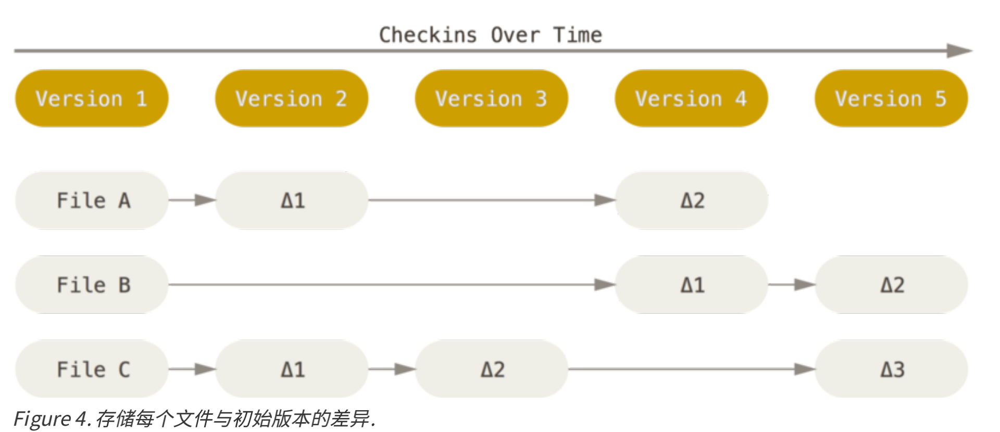
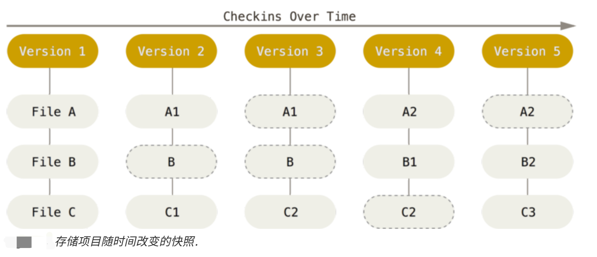

<!DOCTYPE html>
<html  lang="zh-CN" >
<head>
  <meta charset="UTF-8">
  <meta name="viewport"
    content="width=device-width, initial-scale=1.0, minimum-scale=1.0">
  <meta http-equiv="X-UA-Compatible" content="ie=edge">
  <meta name="theme-color" content="#fff" id="theme-color">
  <meta name="description" content="冰冻三尺，非一日之寒；为山九仞，岂一日之功；不忘初心，方得始终！">
  <link rel="icon" href="/favicon.png">
  <title>Git的简单使用方法</title>
  
  
  <meta property="og:title" content="Git的简单使用方法">
  
  
  <meta property="og:url" content="https://blog.onestravel.cn/20170328/8163f0d61598/index.html">
  
  
  <meta property="og:img" content="/images/20180424/git.jpg">
  
  
  <meta property="og:img" content="冰冻三尺，非一日之寒；为山九仞，岂一日之功；不忘初心，方得始终！">
  
  
  <meta property="og:type" content="article">
  <meta property="og:article:published_time" content="2017-03-28">
  <meta property="og:article:modified_time" content="2022-10-08">
  <meta property="og:article:author" content="一个人的旅行">
  
  
  <meta property="og:article:tag" content="Git">
  
  
  
  
  <script>
    // control reverse button
    var reverseDarkList = {
      dark: 'light',
      light: 'dark'
    };
    var themeColor = {
      dark: '#1c1c1e',
      light: '#fff'
    }
    // get the data of css prefers-color-scheme
    var getCssMediaQuery = function() {
      return window.matchMedia('(prefers-color-scheme: dark)').matches ? 'dark' : 'light';
    };
    // reverse current darkmode setting function
    var reverseDarkModeSetting = function() {
      var setting = localStorage.getItem('user-color-scheme');
      if(reverseDarkList[setting]) {
        setting = reverseDarkList[setting];
      } else if(setting === null) {
        setting = reverseDarkList[getCssMediaQuery()];
      } else {
        return;
      }
      localStorage.setItem('user-color-scheme', setting);
      return setting;
    };
    // apply current darkmode setting
    var setDarkmode = function(mode) {
      var setting = mode || localStorage.getItem('user-color-scheme');
      if(setting === getCssMediaQuery()) {
        document.documentElement.removeAttribute('data-user-color-scheme');
        localStorage.removeItem('user-color-scheme');
        document.getElementById('theme-color').content = themeColor[setting];
      } else if(reverseDarkList[setting]) {
        document.documentElement.setAttribute('data-user-color-scheme', setting);
        document.getElementById('theme-color').content = themeColor[setting];
      } else {
        document.documentElement.removeAttribute('data-user-color-scheme');
        localStorage.removeItem('user-color-scheme');
        document.getElementById('theme-color').content = themeColor[getCssMediaQuery()];
      }
    };
    setDarkmode();
  </script>
  <script>
    function loadScript(url, cb) {
      var script = document.createElement('script');
      script.src = url;
      if (cb) script.onload = cb;
      script.async = true;
      document.body.appendChild(script);
    }
  </script>
  
  <link rel="preload" href="//at.alicdn.com/t/font_1946621_i1kgafibvw.css" as="style" >
  <link rel="preload" href="//at.alicdn.com/t/font_1952792_89b4ac4k4up.css" as="style" >
  
  <link rel="preload" href="/js/lib/lightbox/baguetteBox.min.js" as="script">
  <link rel="preload" href="/js/lib/lightbox/baguetteBox.min.css" as="style" >
  
  
  <link rel="preload" href="/js/lib/lozad.min.js" as="script">
  
  
  
  
  
  <link rel="prefetch" href="//cdn.jsdelivr.net/npm/katex@0.11.1/dist/katex.min.css" as="script">
  
  
  
  <link rel="prefetch" href="//cdn.jsdelivr.net/npm/gitalk@1/dist/gitalk.min.js" as="script">
  
  
  
  
<link rel="stylesheet" href="/css/main.css">

  
  
<link rel="stylesheet" href="//at.alicdn.com/t/font_1946621_i1kgafibvw.css">

  
  
<link rel="stylesheet" href="//at.alicdn.com/t/font_1952792_89b4ac4k4up.css">

  
  
<link rel="stylesheet" href="/js/lib/lightbox/baguetteBox.min.css">

  
  
  
  
<meta name="generator" content="Hexo 5.2.0"><link rel="stylesheet" href="/css/prism-tomorrow.css" type="text/css"></head>


<body>
  <div class="wrapper">
    
    <nav class="navbar">
  <div class="navbar-logo">
    <span class="navbar-logo-main">
      
      
      
      <span class="navbar-logo-dsc">一个人的旅行</span>
    </span>
  </div>
  <div class="navbar-menu">
    
    <a href="/" class="navbar-menu-item">
    
    首页
    
    </a>
    
    <a href="/archives" class="navbar-menu-item">
    
    归档
    
    </a>
    
    <a href="/tags" class="navbar-menu-item">
    
    标签
    
    </a>
    
    <a href="/categories" class="navbar-menu-item">
    
    分类
    
    </a>
    
    <a href="/about" class="navbar-menu-item">
    
    关于
    
    </a>
    
    <a href="/friends" class="navbar-menu-item">
    
    友链
    
    </a>
    
    <a class="navbar-menu-item darknavbar" id="dark"><i class="iconfont icon-weather"></i></a>
    <a class="navbar-menu-item searchnavbar" id="search"><i class="iconfont icon-search" style="font-size: 1.2rem; font-weight: 400;"></i></a>
  </div>
</nav>
    
    <div id="local-search" style="display: none;">
      <input class="navbar-menu-item" id="search-input" placeholder="请输入搜索内容...">
      <div id="search-content"></div>
    </div>
    
    <div class="section-wrap">
      <div class="container">
        <div class="columns">
          <main class="main-column">
<div class="image-wrapper">
  
</div>

<article class="card card-content">
  <header>
    <h1 class="post-title">
      Git的简单使用方法
    </h1>
  </header>
  <div class="post-meta post-show-meta">
    <time datetime="2017-03-28T04:09:00.000Z">
      <i class="iconfont icon-calendar" style="margin-right: 2px;"></i>
      <span>2017-03-28</span>
    </time>
    
    <span class="dot"></span>
    
    <a href="/categories/Git/" class="post-meta-link">Git</a>
    
    
    
    <span class="dot"></span>
    <span>12.6k 字</span>
    
  </div>
  
  <div class="post-meta post-show-meta" style="margin-top: -10px;">
    <div style="display: flex; align-items: center;">
      <i class="iconfont icon-biaoqian" style="margin-right: 2px; font-size: 1.15rem;"></i>
      
      
        <a href="/tags/Git/" class="post-meta-link">Git</a>
      
    </div>
  </div>
  
  </header>
  <div id="section" class="post-content">
    <h1 id="Git的使用"><a href="#Git的使用" class="headerlink" title="Git的使用"></a>Git的使用</h1><h2 id="一、认识-Git"><a href="#一、认识-Git" class="headerlink" title="一、认识 Git"></a>一、认识 Git</h2><h3 id="1-Git-和替他版本控制系统的差异"><a href="#1-Git-和替他版本控制系统的差异" class="headerlink" title="1. Git 和替他版本控制系统的差异"></a>1. Git 和替他版本控制系统的差异</h3><ul>
<li><p><strong>直接记录快照，非差异比较</strong></p>
<ul>
<li>git 和其他版本控制系统主要差别在于对 Git 对待数据的方法。其他版本控制系统（CVS、Subversion等等）大部分都是一文件变更列表的方式存储信息，将保存信息看做一组基本文件和每个文件跟随时间逐步积累的差异。</li>
</ul>


<ul>
<li>Git 对待数据更像是快照流：将数据看做是对小型文件的一组快照。每次提交之后/保存项目状态时，对当时的全部文件制作一个快照，并保存这个快照的索引。如果文件没有修改，Git 就不再重新存储，只保留一个链接指向之前存的文件（更高效）。</li>
</ul>

</li>
<li><p><strong>本地执行，更安全，更便捷</strong></p>
<ul>
<li>Git 在克隆代码时，会将项目的完整历史保存在本地磁盘，与服务器形成分布式系统，增加项目的安全性。</li>
<li>Git 在本地磁盘有完整的历史，则Git绝大多数操作都只需要访问本地文件和资源，不会需要网络上的项目信息，使用起来更加便捷（如在离线环境可以进行除了向远程提交修改的操作外的其他操作，等有网络后，在推送到远程服务器）。</li>
</ul>
</li>
<li><p><strong>保证完整性</strong></p>
<p>Git 中所有数据在存储前都计算检验和（SHA-1散列机制，由40个十六进制字符组成的字符串），然后以检验和来引用，这意味着 Git 对更改文件任何内容或目录都可知。保证文件不会在不知情情况下损坏或丢失信息。</p>
</li>
<li><p><strong>Git 一般只添加数据</strong></p>
<p>Git 操作几乎只往数据库中增加数据。很难让 Git 执行任何不可逆操作，或者让它以任何方式清除数据（未提交的本地修改可能会丢失或弄乱修改内容）。</p>
</li>
</ul>
<h3 id="2-Git-的工作区"><a href="#2-Git-的工作区" class="headerlink" title="2. Git 的工作区"></a>2. Git 的工作区</h3><p>​    Git 有三种状态：已提交（committed）、已修改（modified）、和已暂存（staged）。已提交表示数据已安全保存在本地数据库中。已修改表示修改了文件，但还没保存到数据库中。已暂存表示对一个已修改文件的当前版本做了标记，使之包含在下次提交的快照中。</p>
<p>由此可引入 Git 的三个工作区域：</p>
<ul>
<li>Git 仓库：Git 用来保存项目的元数据和对象数据库的地方。</li>
<li>工作目录：对项目的某个版本独立提起出来的内容。在磁盘上公使用或修改。</li>
<li>暂存区域：时一个文件，保存了下次将提交的文件列表信息，一般在 Git 仓库目录中，也被称作“索引”。</li>
</ul>
<p><strong>Git 在三个区域的工作流程如下：</strong></p>
<ul>
<li>在工作牡蛎中修改文件</li>
<li>暂存文件，将文件的快照放入暂存区域</li>
<li>提交更新，找到暂存区域的文件，将快照永久性存储到 Git 仓库目录。</li>
</ul>
<h2 id="二、Git的配置"><a href="#二、Git的配置" class="headerlink" title="二、Git的配置"></a>二、Git的配置</h2><h3 id="1-Git-的下载安装"><a href="#1-Git-的下载安装" class="headerlink" title="1. Git 的下载安装"></a>1. Git 的下载安装</h3><p>Git下载地址：<a target="_blank" rel="noopener" href="https://git-scm.com/download">https://git-scm.com/download</a></p>
<p>选择自己合适的版本进行下载</p>
<p>下载之后选择路径，默认安装就好。</p>
<h3 id="2-初次运行-Git-前的配置"><a href="#2-初次运行-Git-前的配置" class="headerlink" title="2. 初次运行 Git 前的配置"></a>2. 初次运行 Git 前的配置</h3><p>Git 自带一个 git config 的工具来帮助设置控制 Git 外观和行为的配置变量，这些变量存储在三个不同的位置：</p>
<ul>
<li><p><code>/etc/gitconfig</code>文件：包含系统上每一个用户及他们仓库的通用配置。如果使用带有<code>--system</code>选项的 git config 时，它会从此文件读写配置变量。</p>
</li>
<li><p><code>~/.gitconfig</code> 或 <code>~/.config/git/config</code> 文件：只针对当前用户。可以传递 <code>--global</code> 选项让 Git 读写此文件。</p>
</li>
<li><p>当前使用仓库的 Git 目录中的 config 文件（``.git/config）：针对该仓库</p>
</li>
</ul>
<p>每一个级别覆盖上一个级别的配置，所以 <code>./git/config</code> 的配置变量会覆盖 <code>/etc/gitconfig</code> 中的配置变量</p>
<h3 id="3-用户信息配置"><a href="#3-用户信息配置" class="headerlink" title="3. 用户信息配置"></a>3. 用户信息配置</h3><p>安装完 Git 需要设置用户名和右键地址。这些信息会写入到后面的每一次提交中，不可更改：</p>
<pre class=" language-bash"><code class="language-bash">$ <span class="token function">git</span> config --global user.name <span class="token string">"Your UserName"</span>
$ <span class="token function">git</span> config --global user.email <span class="token string">"Your Email Address"</span></code></pre>
<p>&gt; 如果使用了 <code>--global</code> 选项，改命令只需要运行一次，之后在改系统上进行任何 Git 操作，都会使用这些信息。如果想针对特定项目使用不同的用户名和邮箱信息，则可以在那个项目目录下运行没有 <code>--global</code> 选项的命令来配置。</p>
<h3 id="4-检查配置信息"><a href="#4-检查配置信息" class="headerlink" title="4. 检查配置信息"></a>4. 检查配置信息</h3><p>可以使用 <code>git config --list</code> 命令来列出所有 Git 当前能找到的配置。</p>
<pre class=" language-bash"><code class="language-bash">$ <span class="token function">git</span> config --list
color.status<span class="token operator">=</span>auto
color.branch<span class="token operator">=</span>auto
color.interactive<span class="token operator">=</span>auto
color.diff<span class="token operator">=</span>auto
<span class="token punctuation">..</span>.
user.name<span class="token operator">=</span>Your UserName
user.email<span class="token operator">=</span>Your Email Address</code></pre>
<p>可以通过 <code>git config &lt;key&gt;</code> 来检查 Git 的某一项配置</p>
<pre class=" language-bash"><code class="language-bash">$ <span class="token function">git</span> config user.name
Your UserName</code></pre>
<h2 id="三、Git的使用"><a href="#三、Git的使用" class="headerlink" title="三、Git的使用"></a>三、Git的使用</h2><h3 id="1、获取-Git-仓库"><a href="#1、获取-Git-仓库" class="headerlink" title="1、获取 Git 仓库"></a>1、获取 Git 仓库</h3><h4 id="1-1-从服务器克隆一个现有的-Git-仓库"><a href="#1-1-从服务器克隆一个现有的-Git-仓库" class="headerlink" title="1.1 从服务器克隆一个现有的 Git 仓库"></a>1.1 从服务器克隆一个现有的 Git 仓库</h4><p>​    如果已经在服务器存在了 Git 仓库，则使用 <code>git clone</code> 命令。这里和其他 VCS 系统不同的时 Git 克隆是将菜 Git 仓库服务器上的几乎所有数据复制到本地磁盘，而不是仅仅复制完成工作所需的文件。可以使用任何一个克隆下来的用户端来重建服务器上的仓库。</p>
<p>Git 支持多种传输协议：<code>https://</code>协议， <code>git://</code> 协议，SSH 传输协议（如：user@server:path/to/repo.git）。 </p>
<p>*<em>克隆仓库的命令格式是<code>git clonr [url]</code> *</em>:</p>
<pre class=" language-bash"><code class="language-bash">$ <span class="token function">git</span> clone https://github.com/libgit2/libgit2</code></pre>
<p>这会在当前目录下创建一个名为”libgit2” 的目录，并在这个目录下初始化一个 <code>.git</code> 文件夹，从远程仓库拉取的所有数据都会放入 <code>.git</code> 文件夹，然后从中读取最新版本的文件拷贝。进入这个新建的 “libgit2” 文件夹，会看到所有的项目文件已经在里面了，可以开始后续的开发和使用。</p>
<p>如果想在克隆仓库的时候自定义本地仓库的名字，可以使用如下命令：</p>
<pre class=" language-bash"><code class="language-bash">$ <span class="token function">git</span> clone https://github.com/libgit2/libgit2 mylibgit</code></pre>
<p>这个上一个命令执行相同的操作，只是在本地创建的文件夹名字变为“mylibgit”</p>
<h4 id="1-2-在现有目录中初始化仓库"><a href="#1-2-在现有目录中初始化仓库" class="headerlink" title="1.2 在现有目录中初始化仓库"></a>1.2 在现有目录中初始化仓库</h4><p>如果打算在新的目录中使用 Git 进行项目管理，可有在改牡蛎下进行初始化仓库</p>
<pre class=" language-bash"><code class="language-bash">$ <span class="token function">git</span> init</code></pre>
<p>该命令将创建一个名为 <code>.git</code> 的文件夹，这个文件夹含有初始化的 Git 仓库中所有的必须文件。</p>
<p>如果在一个已经存在的文件夹中初始化 Git 仓库，则应该跟踪这些文件并提交。</p>
<p>Git 通过 <code>git add</code> 命令来实现对指定文件的跟踪，通过执行 <code>git commit</code> 命令来提交文件。</p>
<pre class=" language-bash"><code class="language-bash">$ <span class="token function">git</span> add test.txt
$ <span class="token function">git</span> commit -m <span class="token string">"init project"</span></code></pre>
<h3 id="2-仓库更新相关"><a href="#2-仓库更新相关" class="headerlink" title="2. 仓库更新相关"></a>2. 仓库更新相关</h3><p>仓库文件在修改后，有两种状态：已跟踪（被纳入版本控制的文件，在上一次快照中有它们的记录，在工作一段时间后，它们的状态可能处于未修改，已修改或已放入暂存区）或未跟踪（除已跟踪文件外的所有文件，既不存在于上次快照记录中，也没放入暂存区）。</p>
<h4 id="2-1-检测当前文件状态"><a href="#2-1-检测当前文件状态" class="headerlink" title="2.1 检测当前文件状态"></a>2.1 检测当前文件状态</h4><p>使用 <code>git status</code> 命令来查看文件处于什么状态</p>
<pre class=" language-bash"><code class="language-bash">$ <span class="token keyword">echo</span> <span class="token string">'My Project'</span> <span class="token operator">></span> README
$ <span class="token function">git</span> status
On branch master
Untracked files:
  <span class="token punctuation">(</span>use <span class="token string">"git add &lt;file>..."</span> to include <span class="token keyword">in</span> what will be committed<span class="token punctuation">)</span>
    README
nothing added to commit but untracked files present <span class="token punctuation">(</span>use <span class="token string">"git add"</span> to
track<span class="token punctuation">)</span></code></pre>
<p>可以看到当前分支处于 master 分支，在当前仓库中发现一个未跟踪文件 “README”</p>
<h4 id="2-2-跟踪新文件"><a href="#2-2-跟踪新文件" class="headerlink" title="2.2 跟踪新文件"></a>2.2 跟踪新文件</h4><p>使用<code>git add</code> 命令跟踪一个文件</p>
<pre class=" language-bash"><code class="language-bash">$ <span class="token function">git</span> add README </code></pre>
<p>此时在运行 <code>git status</code> 命令，可以看到 README 文件一杯跟踪，并处于暂存状态</p>
<pre class=" language-bash"><code class="language-bash">$ <span class="token function">git</span> status
On branch master
Changes to be committed:
  <span class="token punctuation">(</span>use <span class="token string">"git reset HEAD &lt;file>..."</span> to unstage<span class="token punctuation">)</span>
    new file: README</code></pre>
<p>只要在 Changes to be committed 这行下面的，就说明是已暂存状态。</p>
<blockquote>
<p><code>git add</code> 命令使用文件或目录的路径作为参数，如果参数是目录路径，则改命令将递归跟踪改目录下所有文件。</p>
</blockquote>
<h4 id="2-3-暂存已修改文件"><a href="#2-3-暂存已修改文件" class="headerlink" title="2.3 暂存已修改文件"></a>2.3 暂存已修改文件</h4><p>修改一个已经被跟踪的文件，如 test.txt ，然后运行<code>git status</code> 命令，会看到一下内容</p>
<pre class=" language-bash"><code class="language-bash">$ <span class="token function">git</span> status
On branch master
Changes to be committed:
  <span class="token punctuation">(</span>use <span class="token string">"git reset HEAD &lt;file>..."</span> to unstage<span class="token punctuation">)</span>

    new file:   README

Changes not staged <span class="token keyword">for</span> commit:
  <span class="token punctuation">(</span>use <span class="token string">"git add &lt;file>..."</span> to update what will be committed<span class="token punctuation">)</span>
  <span class="token punctuation">(</span>use <span class="token string">"git checkout -- &lt;file>..."</span> to discard changes <span class="token keyword">in</span> working directory<span class="token punctuation">)</span>

    modified:   test.txt
</code></pre>
<p>文件 test.txt 出现在 <code>Changes not staged for commit</code> 下面，说明已跟踪文件发生变化，但还没有放到暂存区，要暂存这次更新，需要运行<code>git add</code>命令。</p>
<blockquote>
<p><code>git add</code>是个多功能命令，可以用它开始跟踪文件；或者把已跟踪的文件放到暂存区；还能用于合并时将有冲突的文件标记位已解决状态等。</p>
</blockquote>
<p>接下来运行 <code>git add</code> 命令将 test.txt 文件放到暂存区，然后在看看 <code>git status</code> 的输出</p>
<pre class=" language-bash"><code class="language-bash">$ <span class="token function">git</span> add test.txt
$ <span class="token function">git</span> status
On branch master
Changes to be committed:
  <span class="token punctuation">(</span>use <span class="token string">"git reset HEAD &lt;file>..."</span> to unstage<span class="token punctuation">)</span>

    new file:   README
    modified:   test.txt</code></pre>
<p>再次修改 test.txt 文件，然后运行 <code>git status</code> 命令查看文件状态：</p>
<pre class=" language-bash"><code class="language-bash">$ <span class="token function">git</span> status
On branch master
Changes to be committed:
  <span class="token punctuation">(</span>use <span class="token string">"git reset HEAD &lt;file>..."</span> to unstage<span class="token punctuation">)</span>

    new file:   README
    modified:   test.txt

Changes not staged <span class="token keyword">for</span> commit:
  <span class="token punctuation">(</span>use <span class="token string">"git add &lt;file>..."</span> to update what will be committed<span class="token punctuation">)</span>
  <span class="token punctuation">(</span>use <span class="token string">"git checkout -- &lt;file>..."</span> to discard changes <span class="token keyword">in</span> working directory<span class="token punctuation">)</span>

    modified:   test.txt
</code></pre>
<p>可以看到 test.txt 文件同时出现在了暂存区和非暂存区。如果此时进行提交，test.txt 文件的版本是最后一次运行<code>git add</code> 命令时的那个版本，而不是运行<code>git commit</code>时，工作目录中的版本。所以在运行了<code>git add</code> 之后有做了修订的文件，需要重新运行<code>git add</code>把最新版本重新 暂存起来。</p>
<h4 id="2-4-文件状态预览"><a href="#2-4-文件状态预览" class="headerlink" title="2.4 文件状态预览"></a>2.4 文件状态预览</h4><p><code>git status</code> 命令输出非常详细，如果使用<code>git status -s</code>命令或<code>git status --short</code> 命令，将得到一种更为紧凑的格式输出。</p>
<pre class=" language-bash"><code class="language-bash">$ <span class="token function">git</span> status -s           
A  README
MM test.txt
A  version
?? LICENSE.txt
</code></pre>
<ul>
<li>新添加的未跟踪文件前有 <code>??</code>标记</li>
<li>新添加到暂存区中的问价前有 <code>A</code>标记</li>
<li>修改或的文件前面有 <code>M</code>标记</li>
<li>出现在右边的 <code>M</code> 表示该问家被修改了但还没有放入暂存区</li>
<li>出现在左边的 <code>M</code> 表示改文件被修改了并放入了暂存区。</li>
</ul>
<h4 id="2-4-忽略文件"><a href="#2-4-忽略文件" class="headerlink" title="2.4 忽略文件"></a>2.4 忽略文件</h4><p>我们总会有写文件无需纳入 Git 管理，也不希望它们总出现在未跟踪文件列表，通常都是些自动生成的文件，比如日志文件，或者在编译过程中创建的临时文件等。这种情况下，我们可以创建一个名为<code>.gitignore</code>的文件，列出要忽略的文件模式。</p>
<pre class=" language-bash"><code class="language-bash">$ <span class="token function">cat</span> .gitignore 
*.iml
*.log
*.tmp
/build/</code></pre>
<ul>
<li>第一,二，三行告诉 Git 忽略所有以 <code>.iml</code>，以<code>.log</code>,以<code>.tmp</code>结尾的文件</li>
<li>第四行告诉Git 忽略<code>build</code>文件夹中的所有文件</li>
</ul>
<p><strong>文件<code>.gitignore</code>的格式规范如下：</strong></p>
<ol>
<li>所有空行或者以#开头的行都会被 Git 忽略</li>
<li>可以使用标准的 glob 模式匹配</li>
<li>匹配模式可以以 <code>/</code> 开头房子递归</li>
<li>匹配模式可以以 <code>/</code> 结尾指定目录</li>
<li>要忽略指定模式以外的文件或目录，可以在模式前加上 <code>!</code> 取反。</li>
</ol>
<blockquote>
<p>所谓 glob 模式是指 shell 所使用的简化了的正则表达式。</p>
<ul>
<li><code>*</code> 匹配零个或多个任意字符</li>
<li><code>[abc]</code> 匹配任何一个列在方括号中的字符（要么匹配一个a，要么匹配一个 b,要么匹配一个 c）</li>
<li><code>[0-9]</code> 在方括号中使用短划线分隔两个字符，表示在这两个字符范围内的都可以匹配。</li>
<li><code>?</code> 只匹配一个任意字符</li>
<li><code>a/**/z</code> 使用两个 型号表示匹配任意中间目录</li>
</ul>
</blockquote>
<h4 id="2-5-查看已暂存和未暂存的修改"><a href="#2-5-查看已暂存和未暂存的修改" class="headerlink" title="2.5 查看已暂存和未暂存的修改"></a>2.5 查看已暂存和未暂存的修改</h4><p>如果<code>git status</code>命令输出过于模糊，想知道具体修改了深地方，可以用<code>git diff</code> 命令。</p>
<pre class=" language-bash"><code class="language-bash">$ <span class="token function">git</span> <span class="token function">diff</span>
<span class="token function">diff</span> --git a/test.txt b/test.txt
index 9c9852f<span class="token punctuation">..</span>bb08ffe 100644
--- a/test.txt
+++ b/test.txt
@@ -1,3 +1,6 @@
 This is <span class="token function">test</span> <span class="token function">file</span>

 modified
+
+
+modefied  two</code></pre>
<p>此命令比较的是工作目录中当前暂存文件和暂存区域快照之间的差异，也就是修改之后还没有暂存起来的变化内容。</p>
<p>若要查看已暂存的将要添加到下移提交的内容里，可以用<code>git diff --cached</code>命令。（Git 1.6.1及更高版本允许使用<code>git diff --staged</code>,效果相同。）</p>
<pre class=" language-bash"><code class="language-bash">$ <span class="token function">git</span> <span class="token function">diff</span> --staged
<span class="token function">diff</span> --git a/README b/README
new <span class="token function">file</span> mode 100644
index 0000000<span class="token punctuation">..</span>cd19876
--- /dev/null
+++ b/README
@@ -0,0 +1 @@
+My Project-
<span class="token function">diff</span> --git a/test.txt b/test.txt
index 9915fa7<span class="token punctuation">..</span>9c9852f 100644
--- a/test.txt
+++ b/test.txt
@@ -1 +1,3 @@
-This is <span class="token function">test</span> file-
+This is <span class="token function">test</span> <span class="token function">file</span>
+
+modified
<span class="token function">diff</span> --git a/version b/version
new <span class="token function">file</span> mode 100644
index 0000000<span class="token punctuation">..</span>6029d7f
--- /dev/null
+++ b/version
@@ -0,0 +1,2 @@
+version: 1.0.0
+code: 100</code></pre>
<h4 id="2-6-提交更新"><a href="#2-6-提交更新" class="headerlink" title="2.6 提交更新"></a>2.6 提交更新</h4><p>在提交更新之前，需要确认一下是否还有什么修改过的文件或者新建的文件没有<code>git add</code> 过，否则提交的时候不会记录这些没暂存起来的变化。这些修改过的文件只保留在本地磁盘。</p>
<pre class=" language-bash"><code class="language-bash">$ <span class="token function">git</span> commit</code></pre>
<p>这种方式会启动文本编辑器以便输入本次提交的说明。</p>
<pre class=" language-bash"><code class="language-bash">
<span class="token comment" spellcheck="true"># Please enter the commit message for your changes. Lines starting</span>
<span class="token comment" spellcheck="true"># with '#' will be ignored, and an empty message aborts the commit.</span>
<span class="token comment" spellcheck="true">#</span>
<span class="token comment" spellcheck="true"># On branch master</span>
<span class="token comment" spellcheck="true"># Changes to be committed:</span>
<span class="token comment" spellcheck="true">#       new file:   README</span>
<span class="token comment" spellcheck="true">#       modified:   test.txt</span>
<span class="token comment" spellcheck="true">#       new file:   version</span>
<span class="token comment" spellcheck="true">#</span>
<span class="token comment" spellcheck="true"># Changes not staged for commit:</span>
<span class="token comment" spellcheck="true">#       modified:   test.txt</span>
<span class="token comment" spellcheck="true">#</span>
<span class="token comment" spellcheck="true"># Untracked files:</span>
<span class="token comment" spellcheck="true">#       .gitignore</span>
<span class="token comment" spellcheck="true">#       LICENSE.txt</span>
<span class="token comment" spellcheck="true">#</span>
~<span class="token string">".git/COMMIT_EDITMSG"</span> 17L, 358C</code></pre>
<p>可以看到，默认的提交消息包含最后一次运行<code>git status</code> 的输出，放在注释行里。另外开头还有一空行，用于输入提交说明。退出编辑器时，Git 会丢掉注释行，用输入的提交福袋信息生成一次提交。</p>
<p>也可以在 <code>commit</code> 命令后添加 <code>-m</code>选项，将提交信息语命令放在同一行。</p>
<pre class=" language-bash"><code class="language-bash">$ <span class="token function">git</span> commit -m<span class="token string">"update text.txt; add README,version File"</span>
<span class="token punctuation">[</span>master ba93592<span class="token punctuation">]</span> update text.txt<span class="token punctuation">;</span> add README,version File
 3 files changed, 6 insertions<span class="token punctuation">(</span>+<span class="token punctuation">)</span>, 1 deletion<span class="token punctuation">(</span>-<span class="token punctuation">)</span>
 create mode 100644 README
 create mode 100644 version</code></pre>
<p>可以看到，在提交的信息中会告诉当前是在哪个分支（master）提交的，本次提交的完整 SHA-1校验和（ba93592），以及本次提交中，有多少文件修订过，多少行添加和删改过。</p>
<blockquote>
<p>提交时记录的是放在暂存区域的快照。任何还未暂存的文件仍然保持已修改状态，可以在下次提交时纳入版本管理。每一次运行提交操作，都是对项目做一次快照，以后可以回到这个状态，或者进行比较。</p>
</blockquote>
<h4 id="2-7-跳过使用暂存区域"><a href="#2-7-跳过使用暂存区域" class="headerlink" title="2.7 跳过使用暂存区域"></a>2.7 跳过使用暂存区域</h4><p>尽管使用暂存区域的方式可以精心准备要提交的细节，但有时候这么做略显繁琐。Git提供了一个跳过使用暂存区域的方式，只要在提交的时候，给<code>git commit</code> 加上 <code>-a</code> 选项，Git 就会自动把所有已经跟踪过的文件暂存起来一并提交，从而跳过<code>git add</code> 步骤：</p>
<pre class=" language-bash"><code class="language-bash">$  <span class="token function">git</span> commit -a -m <span class="token string">'added .gitignore'</span>    
<span class="token punctuation">[</span>master 57e60ca<span class="token punctuation">]</span> added .gitignore
 1 <span class="token function">file</span> changed, 3 insertions<span class="token punctuation">(</span>+<span class="token punctuation">)</span></code></pre>
<h4 id="2-8-移除文件"><a href="#2-8-移除文件" class="headerlink" title="2.8 移除文件"></a>2.8 移除文件</h4><p>要从 Git 中移除某个文件，就必须要从已跟踪的文件清单中移除（从暂存区域移除），然后提交。可以用<code>git rm</code>命令完成此项工作，并连带从工作目录中删除指定的文件，这样以后就不会出现在未跟踪文件清单中了。</p>
<p>如果只是简单的从工作目录中手工删除文件，运行<code>git  status</code>时就会在“Changes not staged for</p>
<p>commit” （未暂存清单）部分看到</p>
<pre class=" language-bash"><code class="language-bash">$ <span class="token function">rm</span> test.txt 
$ <span class="token function">git</span> status
On branch master
Changes not staged <span class="token keyword">for</span> commit:
  <span class="token punctuation">(</span>use <span class="token string">"git add/rm &lt;file>..."</span> to update what will be committed<span class="token punctuation">)</span>
  <span class="token punctuation">(</span>use <span class="token string">"git checkout -- &lt;file>..."</span> to discard changes <span class="token keyword">in</span> working directory<span class="token punctuation">)</span>

    deleted:    test.txt

Untracked files:
  <span class="token punctuation">(</span>use <span class="token string">"git add &lt;file>..."</span> to include <span class="token keyword">in</span> what will be committed<span class="token punctuation">)</span>

    .gitignore
    LICENSE.txt

no changes added to commit <span class="token punctuation">(</span>use <span class="token string">"git add"</span> and/or <span class="token string">"git commit -a"</span><span class="token punctuation">)</span>
</code></pre>
<p>然后在运行<code>git rm</code> 记录此次移除文件的操作：</p>
<pre class=" language-bash"><code class="language-bash">$ <span class="token function">git</span> <span class="token function">rm</span> test.txt
$ <span class="token function">git</span> status
On branch master
Changes to be committed:
  <span class="token punctuation">(</span>use <span class="token string">"git reset HEAD &lt;file>..."</span> to unstage<span class="token punctuation">)</span>

    deleted:    test.txt

Untracked files:
  <span class="token punctuation">(</span>use <span class="token string">"git add &lt;file>..."</span> to include <span class="token keyword">in</span> what will be committed<span class="token punctuation">)</span>

    .gitignore
    LICENSE.txt
</code></pre>
<p>下一次提交时，改文件就不再纳入版本管理了。如果删除之前修改过并切已经放到暂存区域的话，则必须要用强制删除选项 <code>-f</code>(force 首字母)。用于防止巫山还没有添加到快照的数据，这样的数据不能被 Git 恢复。</p>
<p>另外一种情况是：我们想把文件从 Git 仓库中删除（亦从暂存区玉移除），但仍然希望保留在当前工作目录中。换句话说，你想让文件保留在磁盘，但是不想让 Git 继续跟踪。当你忘记添加 <code>.gitignore</code> 文件，不小心把一个很大的日志文件或一堆编译生成的文件添加到暂存区时，可以使用这一做法。使用<code>--cached</code> 选项。</p>
<pre class=" language-bash"><code class="language-bash">$ <span class="token function">git</span> <span class="token function">rm</span> --cached test.txt</code></pre>
<p>git rm 命令后面可以列出文件或者目录的名字，也可以使用 glob 模式。比方说：</p>
<pre class=" language-bash"><code class="language-bash">$ <span class="token function">git</span> <span class="token function">rm</span> log/\*.log</code></pre>
<p>注意到星号 * 之前的反斜杠 \，因为 Git 有它自己的文件模式扩展匹配方式，所以我们不用 shell 来帮忙展开。</p>
<p>此命令删除 log/ 目录下扩展名为 .log 的所有文件。</p>
<h4 id="2-9-移动文件"><a href="#2-9-移动文件" class="headerlink" title="2.9 移动文件"></a>2.9 移动文件</h4><p>Git 并不显示跟踪文件移动操作。如果在 Git 中重名了了某个文件，仓库中存储的元数据并不会体现出这是一次改名操作。</p>
<p>要在 Git 中对文件改名，可以这么做：</p>
<pre class=" language-bash"><code class="language-bash">$ <span class="token function">git</span> <span class="token function">mv</span> file_from file_to</code></pre>
<p>此时查看状态信息，也可以看到重命名操作的说明</p>
<pre class=" language-bash"><code class="language-bash">$ <span class="token function">git</span> <span class="token function">mv</span> README README.md
$ <span class="token function">git</span> status
On branch master
Changes to be committed:
  <span class="token punctuation">(</span>use <span class="token string">"git reset HEAD &lt;file>..."</span> to unstage<span class="token punctuation">)</span>

    renamed:    README -<span class="token operator">></span> README.md
    deleted:    test.txt
</code></pre>
<p>其实，运行<code>git mv</code> 就相当于运行了下面三条命令：</p>
<pre class=" language-bash"><code class="language-bash">$ <span class="token function">mv</span> README README.md
$ <span class="token function">git</span> <span class="token function">rm</span> README
$ <span class="token function">git</span> add README.md
</code></pre>
<h3 id="3-查看提交历史"><a href="#3-查看提交历史" class="headerlink" title="3. 查看提交历史"></a>3. 查看提交历史</h3><p><code>git log</code>命令可以在提交了若干更新或者克隆了某个项目之后，回顾提交历史。</p>
<pre class=" language-bash"><code class="language-bash">$ <span class="token function">git</span> log
commit f974236b7551a860b5c31c184cff66a66970603d <span class="token punctuation">(</span>HEAD -<span class="token operator">></span> master<span class="token punctuation">)</span>
Author: TestUserName <span class="token operator">&lt;</span>test@example.com<span class="token operator">></span>
Date:   Thu Oct 22 19:50:29 2020 +0800

    add .gitignore LICENSE.txt

commit 29fb9b4a159899da5675c132b64f1bcf0170c7a5
Author: TestUserName <span class="token operator">&lt;</span>test@example.com<span class="token operator">></span>
Date:   Thu Oct 22 19:17:14 2020 +0800

    added .gitignore

commit ba935920d4afc2121b674f933bada9d1c9791fa0
Author: TestUserName <span class="token operator">&lt;</span>test@example.com<span class="token operator">></span>
Date:   Thu Oct 22 17:56:01 2020 +0800

    update text.txt<span class="token punctuation">;</span> add README,version File

commit 4ee1d4d20421d9276bc80808276207940695bbff
Author: TestUserName <span class="token operator">&lt;</span>test@example.com<span class="token operator">></span>
Date:   Thu Oct 22 10:51:17 2020 +0800

    init</code></pre>
<p>默认不用任何参数的话，<code>git log</code> 会按照提交时间列出所有的更新，最近的更新排在最上面。这个命令会列出每个提交的 SHA-1校验和、作者的名字和电子邮件地址、提交时间以及提交说明。</p>
<p><code>git log</code> 有许多选项可以用来搜寻索要找的提交，下面列出一下最常用的：</p>
<p><strong><code>-p</code> 用来显示每次提交的内容差异，也可以加上 <code>-2</code>来仅显示最近两次提交</strong></p>
<pre class=" language-bash"><code class="language-bash">$ <span class="token function">git</span> log -p -2
commit f974236b7551a860b5c31c184cff66a66970603d <span class="token punctuation">(</span>HEAD -<span class="token operator">></span> master<span class="token punctuation">)</span>
Author: TestUserName <span class="token operator">&lt;</span>test@example.com<span class="token operator">></span>
Date:   Thu Oct 22 19:50:29 2020 +0800

    add .gitignore LICENSE.txt

<span class="token function">diff</span> --git a/.gitignore b/.gitignore
new <span class="token function">file</span> mode 100644
index 0000000<span class="token punctuation">..</span>40c74dc
--- /dev/null
+++ b/.gitignore
@@ -0,0 +1,5 @@
+*.iml
+*.log
+*~
+*.tmp
+
<span class="token function">diff</span> --git a/LICENSE.txt b/LICENSE.txt
new <span class="token function">file</span> mode 100644
index 0000000<span class="token punctuation">..</span>6b1d0bf
--- /dev/null
+++ b/LICENSE.txt
@@ -0,0 +1 @@
+LICENSE
<span class="token function">diff</span> --git a/README b/README.md
similarity index 100%
<span class="token function">rename</span> from README
<span class="token function">rename</span> to README.md
<span class="token function">diff</span> --git a/test.txt b/test.txt
deleted <span class="token function">file</span> mode 100644
index bb08ffe<span class="token punctuation">..</span>0000000
--- a/test.txt
+++ /dev/null
@@ -1,6 +0,0 @@
-This is <span class="token function">test</span> <span class="token function">file</span>
-
-modified
-
-
-modefied  two
commit 29fb9b4a159899da5675c132b64f1bcf0170c7a5
Author: TestUserName <span class="token operator">&lt;</span>test@example.com<span class="token operator">></span>
Date:   Thu Oct 22 19:17:14 2020 +0800

    added .gitignore

<span class="token function">diff</span> --git a/test.txt b/test.txt
index 9c9852f<span class="token punctuation">..</span>bb08ffe 100644
--- a/test.txt
+++ b/test.txt
@@ -1,3 +1,6 @@
 This is <span class="token function">test</span> <span class="token function">file</span>

 modified
+
+
+modefied  two</code></pre>
<p><strong>如果想看到每次提交的简略的统计信息，可以使用<code>--stat</code>选项</strong></p>
<p><code>--stat</code> 选项在每次提交的下面列出额所有被修改过的文件、有多少文件被修改了以及被修改过的文件的哪些行被移除或是添加了。</p>
<pre class=" language-bash"><code class="language-bash">$ <span class="token function">git</span> log --stat
commit f974236b7551a860b5c31c184cff66a66970603d <span class="token punctuation">(</span>HEAD -<span class="token operator">></span> master<span class="token punctuation">)</span>
Author: TestUserName <span class="token operator">&lt;</span>test@example.com<span class="token operator">></span>
Date:   Thu Oct 22 19:50:29 2020 +0800

    add .gitignore LICENSE.txt

 .gitignore          <span class="token operator">|</span> 5 +++++
 LICENSE.txt         <span class="token operator">|</span> 1 +
 README <span class="token operator">=</span><span class="token operator">></span> README.md <span class="token operator">|</span> 0
 test.txt            <span class="token operator">|</span> 6 ------
 4 files changed, 6 insertions<span class="token punctuation">(</span>+<span class="token punctuation">)</span>, 6 deletions<span class="token punctuation">(</span>-<span class="token punctuation">)</span>

commit 29fb9b4a159899da5675c132b64f1bcf0170c7a5
Author: TestUserName <span class="token operator">&lt;</span>test@example.com<span class="token operator">></span>
Date:   Thu Oct 22 19:17:14 2020 +0800

    added .gitignore

 test.txt <span class="token operator">|</span> 3 +++
 1 <span class="token function">file</span> changed, 3 insertions<span class="token punctuation">(</span>+<span class="token punctuation">)</span>

commit ba935920d4afc2121b674f933bada9d1c9791fa0
Author: TestUserName <span class="token operator">&lt;</span>test@example.com<span class="token operator">></span>
Date:   Thu Oct 22 17:56:01 2020 +0800

    update text.txt<span class="token punctuation">;</span> add README,version File

 README   <span class="token operator">|</span> 1 +
 test.txt <span class="token operator">|</span> 4 +++-
 version  <span class="token operator">|</span> 2 ++
 3 files changed, 6 insertions<span class="token punctuation">(</span>+<span class="token punctuation">)</span>, 1 deletion<span class="token punctuation">(</span>-<span class="token punctuation">)</span>

commit 4ee1d4d20421d9276bc80808276207940695bbff
Author: TestUserName <span class="token operator">&lt;</span>test@example.com<span class="token operator">></span>
Date:   Thu Oct 22 10:51:17 2020 +0800

    init

 test.txt <span class="token operator">|</span> 1 +
 1 <span class="token function">file</span> changed, 1 insertion<span class="token punctuation">(</span>+<span class="token punctuation">)</span>
</code></pre>
<p><strong><code>--pretty</code> 选项可以指定使用不同语默认格式的方式展示提交历史。</strong></p>
<p>这个选项还有一些内建子选项可以使用，比如 <code>oneline</code>  将每个提交放在一行显示，查看的提交数很大时非常有用，另外还有 <code>short</code>，<code>full</code> 和<code>fuller</code> ，展示的信息或多或少有些不同。</p>
<pre class=" language-bash"><code class="language-bash">$ <span class="token function">git</span> log --pretty<span class="token operator">=</span>oneline
f974236b7551a860b5c31c184cff66a66970603d <span class="token punctuation">(</span>HEAD -<span class="token operator">></span> master<span class="token punctuation">)</span> add .gitignore LICENSE.txt
29fb9b4a159899da5675c132b64f1bcf0170c7a5 added .gitignore
ba935920d4afc2121b674f933bada9d1c9791fa0 update text.txt<span class="token punctuation">;</span> add README,version File
4ee1d4d20421d9276bc80808276207940695bbff init</code></pre>
<p><code>format</code> 可以定制要显示的记录格式。这样的输出对后期提取分析格外有用。</p>
<pre class=" language-bash"><code class="language-bash">$ <span class="token function">git</span> log --pretty<span class="token operator">=</span>formate:<span class="token string">"%h - %an, %ar : %s"</span>
formate:f974236 - TestUserName, 19 hours ago <span class="token keyword">:</span> add .gitignore LICENSE.txt
formate:29fb9b4 - TestUserName, 20 hours ago <span class="token keyword">:</span> added .gitignore
formate:ba93592 - TestUserName, 21 hours ago <span class="token keyword">:</span> update text.txt<span class="token punctuation">;</span> add README,version File
formate:4ee1d4d - TestUserName, 28 hours ago <span class="token keyword">:</span> init</code></pre>
<p><code>git log --pretty=format</code> 常用的选项 列出了常用的格式占位符写法及其代表的意义。</p>
<table>
<thead>
<tr>
<th>选项</th>
<th>说明</th>
</tr>
</thead>
<tbody><tr>
<td>%H</td>
<td>提交对象（commit）的完整哈哈希字符串</td>
</tr>
<tr>
<td>%h</td>
<td>提交对象的剪短哈希字符串</td>
</tr>
<tr>
<td>%T</td>
<td>树对象（tree）的完整哈希字符串</td>
</tr>
<tr>
<td>%t</td>
<td>树对象的简短哈希字符串</td>
</tr>
<tr>
<td>%P</td>
<td>父对象（parent）的完整哈希字符串</td>
</tr>
<tr>
<td>%p</td>
<td>父对象的简短哈希字符串</td>
</tr>
<tr>
<td>%an</td>
<td>作者（author）的名字</td>
</tr>
<tr>
<td>%ae</td>
<td>作者的电子邮件</td>
</tr>
<tr>
<td>%ad</td>
<td>作者修订日期，可以用–date=选项定制格式,``–date=(relative</td>
</tr>
<tr>
<td>%ar</td>
<td>作者修订日期，按多久以前的方式显示</td>
</tr>
<tr>
<td>%cn</td>
<td>提交者（committer）的名字</td>
</tr>
<tr>
<td>%ce</td>
<td>提交者的电子邮件地址</td>
</tr>
<tr>
<td>%cd</td>
<td>提交日期</td>
</tr>
<tr>
<td>%cr</td>
<td>提交日期，按多久以前的方式显示</td>
</tr>
<tr>
<td>%s</td>
<td>提交说明</td>
</tr>
</tbody></table>
<blockquote>
<p>作者指的是实际做出修改的人</p>
<p>提交者指的是最后将次工作成功提交到仓库的人</p>
<p>当某个项目发布不定，然后某个人核心成员将你的补丁并入项目时，你就是作者，而那个核心成员就是提交者。</p>
</blockquote>
<p>当<code>oneline</code> 或 <code>format</code> 与另一个<code>log</code> 选项 <code>--graph</code> 结合使用时尤其有用。这个选项添加了一些ASCII字符串来形象地展示你的分支、合并历史：</p>
<pre class=" language-bash"><code class="language-bash">$ <span class="token function">git</span> log --pretty<span class="token operator">=</span>format:<span class="token string">"%h %s"</span> --graph</code></pre>
<p><strong><code>git log</code>常用选项</strong></p>
<table>
<thead>
<tr>
<th>选项</th>
<th>说明</th>
</tr>
</thead>
<tbody><tr>
<td>-p</td>
<td>按补丁格式显示每个更新之间的差异</td>
</tr>
<tr>
<td>–stat</td>
<td>显示每次更新的文件系统修改统计信息</td>
</tr>
<tr>
<td>–shortstat</td>
<td>只显示–stat中最后的行数修改添加移除统计</td>
</tr>
<tr>
<td>–name-only</td>
<td>仅在提交信息后显示已修改的文件清单</td>
</tr>
<tr>
<td>–name-status</td>
<td>显示新增、修改、删除的文件清单</td>
</tr>
<tr>
<td>–abbrev-commit</td>
<td>仅显示 SHA-1 的前几个字符，而非所有的40个字符</td>
</tr>
<tr>
<td>–relative-date</td>
<td>使用较短的相对时间显示（比如：”2 weeks ago”）</td>
</tr>
<tr>
<td>–graph</td>
<td>显示 ASCII 图形表示的分支合并历史</td>
</tr>
<tr>
<td>–pretty</td>
<td>使用其他格式显示历史提交信息。可以的选项包括 online,short,full，fuller和 format</td>
</tr>
</tbody></table>
<p><strong>限制输出长度</strong></p>
<p>除了定制输出格式的选项之外，<code>git log</code> 还有许多非常使用的限制输出长度的选项，也就是只输出部分提交信息。前面提到的 -2（<code>-&lt;n&gt;</code>） ，初次之外还有按照时间做闲职的选项，比如<code>--since</code> 和 <code>--until</code> </p>
<pre class=" language-bash"><code class="language-bash">$ <span class="token function">git</span> log --since<span class="token operator">=</span>2.weeks</code></pre>
<p>这个命令可以在多种格式下工作，比如具体某一天”2008-08-08”，或者相对多久以前”1 years 2day 3 minutes ago”</p>
<p>另一个非常有用的筛选选项是 -S，可以列出那些添加或者移除了某些字符的提交。</p>
<pre class=" language-bash"><code class="language-bash">$ <span class="token function">git</span> log -S function_name</code></pre>
<p><strong><code>git log [文件路径]</code> 可以查看选择文件或目录的历史提交</strong></p>
<p><strong>git log 常用输出限制选项</strong></p>
<table>
<thead>
<tr>
<th>选项</th>
<th>说明</th>
</tr>
</thead>
<tbody><tr>
<td>-(n)</td>
<td>仅显示最近的n 条提交 ，如 -2.</td>
</tr>
<tr>
<td>–since,–after</td>
<td>仅显示指定时间之后的提交</td>
</tr>
<tr>
<td>–until,–before</td>
<td>仅显示指定时间之前的提交</td>
</tr>
<tr>
<td>–author</td>
<td>仅显示指定作者相关的提交</td>
</tr>
<tr>
<td>–committer</td>
<td>仅显示指定提交者相关的提交</td>
</tr>
<tr>
<td>-grep</td>
<td>仅显示包含知道关键字的提交</td>
</tr>
<tr>
<td>-S</td>
<td>仅显示添加或移除了某个关键字的提交</td>
</tr>
</tbody></table>
<h3 id="4-撤销操作"><a href="#4-撤销操作" class="headerlink" title="4. 撤销操作"></a>4. 撤销操作</h3><h4 id="4-1-重新提交"><a href="#4-1-重新提交" class="headerlink" title="4.1 重新提交"></a>4.1 重新提交</h4><p>在某些情况下，发现漏了几个文件没有提交，或者是提交信息写错了，此时 ，可以运行带有 <code>--amend</code> 选项的命令尝试重新提交</p>
<pre class=" language-bash"><code class="language-bash">$ <span class="token function">git</span> commit --amend</code></pre>
<p>该命令会将暂存区中的文件提交。如果自上次提交依赖还未做任何改变，快照会保持不变，所修改的只是提交信息。最终只会有一个提交（第二次提交会代替第一次提交的结果）。</p>
<h4 id="4-2修改倒数第n次commit"><a href="#4-2修改倒数第n次commit" class="headerlink" title="4.2修改倒数第n次commit"></a>4.2修改倒数第n次commit</h4><p> git rebase -i HEAD~[倒数第n次commit]</p>
<pre class=" language-shell"><code class="language-shell">$ git rebase -i HEAD~2//修改倒数第二次 commit</code></pre>
<p>执行该命令，会出现编辑窗口，在命令界面编辑倒数第n次提交的commit 前的 pick 为 <code>e</code> 表示编辑</p>
<pre class=" language-bash"><code class="language-bash">pick eae306bcae change:commit msg

<span class="token comment" spellcheck="true"># Rebase 60e669d341..eae306bcae onto 60e669d341 (1 command)</span>
<span class="token comment" spellcheck="true">#</span>
<span class="token comment" spellcheck="true"># Commands:</span>
<span class="token comment" spellcheck="true"># p, pick &lt;commit> = use commit</span>
<span class="token comment" spellcheck="true"># r, reword &lt;commit> = use commit, but edit the commit message</span>
<span class="token comment" spellcheck="true"># e, edit &lt;commit> = use commit, but stop for amending</span>
<span class="token comment" spellcheck="true"># s, squash &lt;commit> = use commit, but meld into previous commit</span>
<span class="token comment" spellcheck="true"># f, fixup &lt;commit> = like "squash", but discard this commit's log message</span>
<span class="token comment" spellcheck="true"># x, exec &lt;command> = run command (the rest of the line) using shell</span>
<span class="token comment" spellcheck="true"># b, break = stop here (continue rebase later with 'git rebase --continue')</span>
<span class="token comment" spellcheck="true"># d, drop &lt;commit> = remove commit</span>
<span class="token comment" spellcheck="true"># l, label &lt;label> = label current HEAD with a name</span>
<span class="token comment" spellcheck="true"># t, reset &lt;label> = reset HEAD to a label</span>
<span class="token comment" spellcheck="true"># m, merge [-C &lt;commit> | -c &lt;commit>] &lt;label> [# &lt;oneline>]</span>
<span class="token comment" spellcheck="true"># .       create a merge commit using the original merge commit's</span>
<span class="token comment" spellcheck="true"># .       message (or the oneline, if no original merge commit was</span>
<span class="token comment" spellcheck="true"># .       specified). Use -c &lt;commit> to reword the commit message.</span>
</code></pre>
<p>改为 </p>
<pre class=" language-bash"><code class="language-bash">e eae306bcae change:commit msg

<span class="token comment" spellcheck="true"># Rebase 60e669d341..eae306bcae onto 60e669d341 (1 command)</span>
<span class="token comment" spellcheck="true">#</span>
<span class="token comment" spellcheck="true"># Commands:</span>
<span class="token comment" spellcheck="true"># p, pick &lt;commit> = use commit</span>
<span class="token comment" spellcheck="true"># r, reword &lt;commit> = use commit, but edit the commit message</span>
<span class="token comment" spellcheck="true"># e, edit &lt;commit> = use commit, but stop for amending</span>
<span class="token comment" spellcheck="true"># s, squash &lt;commit> = use commit, but meld into previous commit</span>
<span class="token comment" spellcheck="true"># f, fixup &lt;commit> = like "squash", but discard this commit's log message</span>
<span class="token comment" spellcheck="true"># x, exec &lt;command> = run command (the rest of the line) using shell</span>
<span class="token comment" spellcheck="true"># b, break = stop here (continue rebase later with 'git rebase --continue')</span>
<span class="token comment" spellcheck="true"># d, drop &lt;commit> = remove commit</span>
<span class="token comment" spellcheck="true"># l, label &lt;label> = label current HEAD with a name</span>
<span class="token comment" spellcheck="true"># t, reset &lt;label> = reset HEAD to a label</span>
<span class="token comment" spellcheck="true"># m, merge [-C &lt;commit> | -c &lt;commit>] &lt;label> [# &lt;oneline>]</span>
<span class="token comment" spellcheck="true"># .       create a merge commit using the original merge commit's</span>
<span class="token comment" spellcheck="true"># .       message (or the oneline, if no original merge commit was</span>
<span class="token comment" spellcheck="true"># .       specified). Use -c &lt;commit> to reword the commit message.</span>

</code></pre>
<p>然后点击 <code>Esc</code> 键，退出编辑模式，使用<code>:wq</code> 命令保存本次编辑。</p>
<p>然后可以对此次提交的文件进行修改 ，该操作会使本地git创建一个临时修改分支，再修改完成后，使用命令回到刚才的分支，并合并修改到刚才分支</p>
<p>修改完成后，使用 git add 命令，添加修改文件索引</p>
<pre class=" language-bash"><code class="language-bash">$ <span class="token function">git</span> add A.java</code></pre>
<p>使用一下命令将本次修改追加到此次修改的commit 中,也可以再该命令后修改 commit msg ，然后使用 <code>:wq</code> 命令保存修改的 commit msg</p>
<pre class=" language-bash"><code class="language-bash">$ <span class="token function">git</span> commit --amend</code></pre>
<p>使用以下命令回到刚才的分支，并合并修改到刚才分支</p>
<pre class=" language-bash"><code class="language-bash">$ <span class="token function">git</span> rebase --continue</code></pre>
<p>使用git push 命令将修改推送到远程</p>
<pre class=" language-shell"><code class="language-shell">$ git push origin develop</code></pre>
<h4 id="4-3-取消暂存的文件"><a href="#4-3-取消暂存的文件" class="headerlink" title="4.3 取消暂存的文件"></a>4.3 取消暂存的文件</h4><p>如果需要将已经添加到暂存区的文件取消暂存，可以使用<code>git reset</code> 命令。</p>
<pre class=" language-bash"><code class="language-bash">$ <span class="token function">git</span> reset HEAD test.txt
Unstaged changes after reset:
M    test.txt</code></pre>
<p>在调用时加上<code>--hard</code> 选项可以令<code>git reset</code> 成为一个危险的命令，会将该项目中的修改丢失。</p>
<h4 id="4-4-撤销对文件的修改"><a href="#4-4-撤销对文件的修改" class="headerlink" title="4.4 撤销对文件的修改"></a>4.4 撤销对文件的修改</h4><p>如果在修改了一段代码后，没有解决问题，所以不想保留该文件的修改是，可以使用<code>git checkout -- &lt;file&gt;</code> 命令来将文件还原成上次提交时的样子。</p>
<pre class=" language-bash"><code class="language-bash">$ <span class="token function">git</span> status
On branch master
Changes not staged <span class="token keyword">for</span> commit:
  <span class="token punctuation">(</span>use <span class="token string">"git add &lt;file>..."</span> to update what will be committed<span class="token punctuation">)</span>
  <span class="token punctuation">(</span>use <span class="token string">"git checkout -- &lt;file>..."</span> to discard changes <span class="token keyword">in</span> working directory<span class="token punctuation">)</span>

    modified:   README.md

no changes added to commit <span class="token punctuation">(</span>use <span class="token string">"git add"</span> and/or <span class="token string">"git commit -a"</span><span class="token punctuation">)</span>
$ <span class="token function">git</span> checkout -- README.md
$ <span class="token function">git</span> status
On branch master
nothing to commit, working tree clean</code></pre>
<h3 id="5、隐藏本地修改"><a href="#5、隐藏本地修改" class="headerlink" title="5、隐藏本地修改"></a>5、隐藏本地修改</h3><p>如果当前修改没修改完，紧急修复一个 bug时，需要先将当前修改内容隐藏，修改完 bug 后，回来继续修改，则可以使用<code>git stash</code> 命令来进行隐藏修改操作</p>
<pre class=" language-shell"><code class="language-shell">$ git stash save "隐藏说明信息" </code></pre>
<p>改命令会将当前修改的已跟踪文件进行隐藏，保存到隐藏栈中。将项目恢复到上次提交时的状态。</p>
<p>查看本地隐藏栈</p>
<pre class=" language-shell"><code class="language-shell">$ git stash list</code></pre>
<p>根据隐藏栈中的对象id将隐藏栈中的一项恢复，继续上次的修改。</p>
<pre class=" language-shell"><code class="language-shell">$ git stash pop stash@{0}</code></pre>
<h3 id="6-仓库的使用"><a href="#6-仓库的使用" class="headerlink" title="6. 仓库的使用"></a>6. 仓库的使用</h3><h4 id="6-1-查看远程仓库"><a href="#6-1-查看远程仓库" class="headerlink" title="6.1 查看远程仓库"></a>6.1 查看远程仓库</h4><p>可以运行<code>git remote</code> 命令来查看已经配置的远程仓库服务器。它会列出知道的每一个远程服务器的简写。如果已经克隆了自己的仓库，至少能看到 origin - 这是克隆的仓库服务器的默认名字。</p>
<pre class=" language-bash"><code class="language-bash">$ <span class="token function">git</span> clone https://github.com/onestravel/test.git 
Cloning into <span class="token string">'test'</span><span class="token punctuation">..</span>.
remote: Enumerating objects: 21, done.
remote: Counting objects: 100% <span class="token punctuation">(</span>21/21<span class="token punctuation">)</span>, done.
remote: Compressing objects: 100% <span class="token punctuation">(</span>9/9<span class="token punctuation">)</span>, done.
remote: Total 21 <span class="token punctuation">(</span>delta 2<span class="token punctuation">)</span>, reused 21 <span class="token punctuation">(</span>delta 2<span class="token punctuation">)</span>, pack-reused 0
Unpacking objects: 100% <span class="token punctuation">(</span>21/21<span class="token punctuation">)</span>, done.
$ <span class="token function">cd</span> <span class="token function">test</span> 
$ <span class="token function">git</span> remote
origin</code></pre>
<p>也可以指定选项 -v，会显示需要读写远程仓库使用的 Git 保存的简写与其对应的 URL。</p>
<pre class=" language-bash"><code class="language-bash">$ <span class="token function">git</span> remote -v
origin    https://github.com/onestravel/test.git <span class="token punctuation">(</span>fetch<span class="token punctuation">)</span>
origin    https://github.com/onestravel/test.git <span class="token punctuation">(</span>push<span class="token punctuation">)</span></code></pre>
<p>如果想要查看某一个远程仓库的更多信息，可以使用 <code>git remote show [remote-name]</code>命令。</p>
<pre class=" language-bash"><code class="language-bash">$ <span class="token function">git</span> remote show origin
* remote origin
  Fetch URL: https://github.com/onestravel/test.git
  Push  URL: https://github.com/onestravel/test.git
  HEAD branch: master
  Remote branch:
    master tracked
  Local branch configured <span class="token keyword">for</span> <span class="token string">'git pull'</span><span class="token keyword">:</span>
    master merges with remote master
  Local ref configured <span class="token keyword">for</span> <span class="token string">'git push'</span><span class="token keyword">:</span>
    master pushes to master <span class="token punctuation">(</span>up to date<span class="token punctuation">)</span></code></pre>
<p>这个命令会列出在特定分支上 pull 或 push 对自动的操作远程仓库中的哪一个分支。也列出了那些远程分支不再本地，那些远程分支已经从服务器上移除了。</p>
<h4 id="6-2-添加远程仓库"><a href="#6-2-添加远程仓库" class="headerlink" title="6.2 添加远程仓库"></a>6.2 添加远程仓库</h4><p>可以使用<code>git remote add &lt;shortname&gt; &lt;url&gt;</code> 来添加一个新的远程 Git 仓库，同时知道一个可以轻松引用的简写：</p>
<pre class=" language-bash"><code class="language-bash">$ <span class="token function">git</span> remote add pb https://github.com/onestravel/test.git
$ <span class="token function">git</span> remote -v
origin    https://github.com/onestravel/test.git <span class="token punctuation">(</span>fetch<span class="token punctuation">)</span>
origin    https://github.com/onestravel/test.git <span class="token punctuation">(</span>push<span class="token punctuation">)</span>
pb    https://github.com/onestravel/test.git <span class="token punctuation">(</span>fetch<span class="token punctuation">)</span>
pb    https://github.com/onestravel/test.git <span class="token punctuation">(</span>push<span class="token punctuation">)</span></code></pre>
<p>此时如果想拉取 pb 对应的仓库服务器上的信息，可以运行：</p>
<pre class=" language-bash"><code class="language-bash">$ <span class="token function">git</span> fetch pb
From https://github.com/onestravel/test
 * <span class="token punctuation">[</span>new branch<span class="token punctuation">]</span>      master     -<span class="token operator">></span> pb/master</code></pre>
<h4 id="6-3-从远程仓库中抓取与拉取"><a href="#6-3-从远程仓库中抓取与拉取" class="headerlink" title="6.3 从远程仓库中抓取与拉取"></a>6.3 从远程仓库中抓取与拉取</h4><p>从远程仓库中获得数据，可以执行：</p>
<pre class=" language-bash"><code class="language-bash">$ <span class="token function">git</span> fetch <span class="token punctuation">[</span>remote_name<span class="token punctuation">]</span></code></pre>
<p>这个命令会访问远程仓库，从中拉取所有你还没有的数据。执行完成后，你将会用于那个远程仓库中所有分支的引用，可以随时合并或查看。</p>
<p><code>git fetch</code> 命令会将数据拉取到本地仓库，但是他不会自动合并或修改当前的工作。当准备好时必须手动将其合并。</p>
<p><code>git pull</code> 命令会自动的抓取并合并远程分支到当前分支，默认情况下，<code>git clone</code> 会自动设置本地 master 分支跟踪克隆的远程仓库的 master 分支。运行 git pull 通常会从最初克隆的服务器上抓取 bong 自动尝试合并到当前所在分支</p>
<h4 id="6-4-推送到远程仓库"><a href="#6-4-推送到远程仓库" class="headerlink" title="6.4 推送到远程仓库"></a>6.4 推送到远程仓库</h4><p><code>git push [remote-name] [branch-name]</code> 命令可以将本地仓库中 当前分支（master）上的为推送到远程仓库的提交，全部推送到远程仓库服务器。</p>
<pre class=" language-bash"><code class="language-bash">$ <span class="token function">git</span> push origin master
Enumerating objects: 21, done.
Counting objects: 100% <span class="token punctuation">(</span>21/21<span class="token punctuation">)</span>, done.
Delta compression using up to 4 threads
Compressing objects: 100% <span class="token punctuation">(</span>11/11<span class="token punctuation">)</span>, done.
Writing objects: 100% <span class="token punctuation">(</span>21/21<span class="token punctuation">)</span>, 1.76 KiB <span class="token operator">|</span> 1.76 MiB/s, done.
Total 21 <span class="token punctuation">(</span>delta 2<span class="token punctuation">)</span>, reused 0 <span class="token punctuation">(</span>delta 0<span class="token punctuation">)</span>
remote: Resolving deltas: 100% <span class="token punctuation">(</span>2/2<span class="token punctuation">)</span>, done.
To https://github.com/onestravel/test.git
 * <span class="token punctuation">[</span>new branch<span class="token punctuation">]</span>      master -<span class="token operator">></span> master</code></pre>
<p>只有当有远程服务器的写入权限时，改命令才会生效。</p>
<p>如果在此次推送之前有其他人推送过时，需要先进行 pull ,将他们的推送拉取到本地并将其合并如本地仓库后才能推送。</p>
<h4 id="6-5-远程仓库的移除与重命名"><a href="#6-5-远程仓库的移除与重命名" class="headerlink" title="6.5 远程仓库的移除与重命名"></a>6.5 远程仓库的移除与重命名</h4><p>想要重命名引用名称，可以使用<code>git remote rename [old name] [new name]</code> ，</p>
<pre class=" language-bash"><code class="language-bash">$ <span class="token function">git</span> remote <span class="token function">rename</span> pb pt
$ <span class="token function">git</span> remote
origin 
pt</code></pre>
<p>这种操作会修改远程分支的名字，比如过去引用<code>pb/master</code> 会变成 <code>pt/master</code> 。</p>
<p>如果想要移除一个远程仓库，可以使用<code>git remote rm</code> 命令：</p>
<pre class=" language-bash"><code class="language-bash">$ <span class="token function">git</span> remote <span class="token function">rm</span> pt
$ <span class="token function">git</span> remote
origin</code></pre>
<h3 id="7-标签的使用"><a href="#7-标签的使用" class="headerlink" title="7. 标签的使用"></a>7. 标签的使用</h3><p>Git  和其他版本控制系统一样，可以给历史中的某一个提交打算标签，以示重要。比如发布结点。</p>
<h4 id="7-1-列出标签"><a href="#7-1-列出标签" class="headerlink" title="7.1 列出标签"></a>7.1 列出标签</h4><p>在 Git 中可以使用<code>git  tag</code> 很直观的列出已有的标签</p>
<pre class=" language-bash"><code class="language-bash">$ <span class="token function">git</span> tag
v1.0
v1.1
v2.0
v2.3</code></pre>
<p>可以使用特定模式查找标签</p>
<pre class=" language-bash"><code class="language-bash">$ <span class="token function">git</span> tag -l <span class="token string">'v2.*'</span>
v2.0
v2.3</code></pre>
<h4 id="7-2-创建标签"><a href="#7-2-创建标签" class="headerlink" title="7.2 创建标签"></a>7.2 创建标签</h4><p>Git 使用两种主要类型的标签：轻量标签（lightweight）与 附注标签（annotated）。</p>
<p>一个轻量标签很像一个不会改变的分支，他只是一个特定提交的引用。</p>
<p>附注标签是存储在 Git 数据库中的一个完整对象。它们是可以被校验的；其中包含打标签者的名字、电子邮件地址、日期时间，还有一个标签信息。并且可以使用 GNU Privacy Guard（GPG）签名与验证。</p>
<p><strong>附注标签</strong></p>
<p>在 Git 中创建一个附注标签时很简单的，最简单的方法是在运行<code>git tag</code> 命令时指定 <code>-a</code> 选项：</p>
<pre class=" language-bash"><code class="language-bash">$ <span class="token function">git</span> tag -a v2.5 -m <span class="token string">'version 2.5'</span>
$ <span class="token function">git</span> tag
v1.0
v1.1
v2.0
v2.3
v2.5</code></pre>
<p>-m 选项指定了一条将会存储在标签中的信息。如果没有为附注标签指定一条信息，Git 会运行编辑器要求你输入信息。 </p>
<p>通过使用 git show 命令可以看到标签信息与对应的提交信息：</p>
<pre class=" language-bash"><code class="language-bash">$ <span class="token function">git</span> show v2.5
tag v2.5
Tagger: wanghu <span class="token operator">&lt;</span>wanghu@do-global.com<span class="token operator">></span>
Date:   Mon Oct 26 20:09:19 2020 +0800

version 2.5

commit bf1c84c9273b827f28c06b26a176a44795b38ef0 <span class="token punctuation">(</span>HEAD -<span class="token operator">></span> master, tag: v2.5, pbhttps/master, origin/master, origin/HEAD<span class="token punctuation">)</span>
Author: TestUserName <span class="token operator">&lt;</span>test@example.com<span class="token operator">></span>
Date:   Fri Oct 23 16:09:46 2020 +0800

    create test.txt

<span class="token function">diff</span> --git a/test.txt b/test.txt
new <span class="token function">file</span> mode 100644
index 0000000<span class="token punctuation">..</span>46fdabe
--- /dev/null
+++ b/test.txt
@@ -0,0 +1 @@
+test code
</code></pre>
<p>输出显示了打标签者的信息、打标签的日期时间、附注信息，然后显示具体的提交信息。</p>
<p><strong>轻量标签</strong></p>
<p> 创建轻量标签，不需要使用 -a、-s 或 -m 选项，只需要提供标签名字：</p>
<pre class=" language-bash"><code class="language-bash">$ <span class="token function">git</span> tag v2.5-1
$ <span class="token function">git</span> tag
v1.0
v1.1
v2.0
v2.3
v2.5
v2.5-1</code></pre>
<p>运行 git show，你不会看到额外的标签信息。命令只会显示出提交信息：</p>
<pre class=" language-bash"><code class="language-bash">$ <span class="token function">git</span> show v2.5-1
commit bf1c84c9273b827f28c06b26a176a44795b38ef0 <span class="token punctuation">(</span>HEAD -<span class="token operator">></span> master, tag: v2.5-1, tag: v2.5, pbhttps/master, origin/master, origin/HEAD<span class="token punctuation">)</span>
Author: TestUserName <span class="token operator">&lt;</span>test@example.com<span class="token operator">></span>
Date:   Fri Oct 23 16:09:46 2020 +0800

    create test.txt

<span class="token function">diff</span> --git a/test.txt b/test.txt
new <span class="token function">file</span> mode 100644
index 0000000<span class="token punctuation">..</span>46fdabe
--- /dev/null
+++ b/test.txt
@@ -0,0 +1 @@
+test code
</code></pre>
<h4 id="7-3-后期打标签"><a href="#7-3-后期打标签" class="headerlink" title="7.3 后期打标签"></a>7.3 后期打标签</h4><p>如果相对过去的提交打标签，需要在命令末尾知道提交的校验和（或部分校验和）：</p>
<pre class=" language-bash"><code class="language-bash">$ <span class="token function">git</span> log --pretty<span class="token operator">=</span>oneline
bf1c84c9273b827f28c06b26a176a44795b38ef0 <span class="token punctuation">(</span>HEAD -<span class="token operator">></span> master, tag: v2.5-1, tag: v2.5, pbhttps/master, origin/master, origin/HEAD<span class="token punctuation">)</span> create test.txt
7236b53506f041de847f43eab3fedaa97d45a789 update README.md
f974236b7551a860b5c31c184cff66a66970603d add .gitignore LICENSE.txt
29fb9b4a159899da5675c132b64f1bcf0170c7a5 added .gitignore
ba935920d4afc2121b674f933bada9d1c9791fa0 update text.txt<span class="token punctuation">;</span> add README,version File
4ee1d4d20421d9276bc80808276207940695bbff init
$ <span class="token function">git</span> tag -a v1.2 7236b53
$ <span class="token function">git</span> show v1.2
tag v1.2
Tagger: wanghu <span class="token operator">&lt;</span>wanghu@do-global.com<span class="token operator">></span>
Date:   Mon Oct 26 20:16:54 2020 +0800

version 1.2
s

commit 7236b53506f041de847f43eab3fedaa97d45a789 <span class="token punctuation">(</span>tag: v1.2<span class="token punctuation">)</span>
Author: TestUserName <span class="token operator">&lt;</span>test@example.com<span class="token operator">></span>
Date:   Fri Oct 23 16:00:21 2020 +0800

    update README.md

<span class="token function">diff</span> --git a/README.md b/README.md
index cd19876<span class="token punctuation">..</span>9fafd26 100644
--- a/README.md
+++ b/README.md
@@ -1 +1,6 @@
 My Project-
+
+
+
+update on dev branch
</code></pre>
<h4 id="7-4-共享标签"><a href="#7-4-共享标签" class="headerlink" title="7.4 共享标签"></a>7.4 共享标签</h4><p>默认情况下，git push 命令并不会传送标签到远程仓库服务器上。在创建完标签后你必须显式地推送标签到共享服务器上。这个过程就像共享远程分支一样 - 你可以运行 git push origin [tagname]。</p>
<pre class=" language-bash"><code class="language-bash">$ <span class="token function">git</span> push origin v2.5
Enumerating objects: 1, done.
Counting objects: 100% <span class="token punctuation">(</span>1/1<span class="token punctuation">)</span>, done.
Writing objects: 100% <span class="token punctuation">(</span>1/1<span class="token punctuation">)</span>, 158 bytes <span class="token operator">|</span> 158.00 KiB/s, done.
Total 1 <span class="token punctuation">(</span>delta 0<span class="token punctuation">)</span>, reused 0 <span class="token punctuation">(</span>delta 0<span class="token punctuation">)</span>
To https://github.com/onestravel/test.git
 * <span class="token punctuation">[</span>new tag<span class="token punctuation">]</span>         v2.5 -<span class="token operator">></span> v2.5
</code></pre>
<p>如果想要一次性推送很多标签，也可以使用带有 –tags 选项的 git push 命令。这将会把所有不在远程仓库服务器上的标签全部传送到远程仓库。</p>
<pre class=" language-bash"><code class="language-bash">$ <span class="token function">git</span> push origin --tags
Enumerating objects: 1, done.
Counting objects: 100% <span class="token punctuation">(</span>1/1<span class="token punctuation">)</span>, done.
Writing objects: 100% <span class="token punctuation">(</span>1/1<span class="token punctuation">)</span>, 160 bytes <span class="token operator">|</span> 160.00 KiB/s, done.
Total 1 <span class="token punctuation">(</span>delta 0<span class="token punctuation">)</span>, reused 0 <span class="token punctuation">(</span>delta 0<span class="token punctuation">)</span>
To https://github.com/onestravel/test.git
 * <span class="token punctuation">[</span>new tag<span class="token punctuation">]</span>         v1.2 -<span class="token operator">></span> v1.2
 * <span class="token punctuation">[</span>new tag<span class="token punctuation">]</span>         v2.5-1 -<span class="token operator">></span> v2.5-1</code></pre>
<h4 id="7-5-检出标签"><a href="#7-5-检出标签" class="headerlink" title="7.5 检出标签"></a>7.5 检出标签</h4><p>如果想要本地工作目录与仓库中知道的标签版本完全一样，可以使用<code>git checkout -b [branch-name] [tag-name]</code> 在特定标签上创建一个新分支：</p>
<pre class=" language-bash"><code class="language-bash">$ <span class="token function">git</span> checkout -b version2.5 v2.5
Switched to a new branch <span class="token string">'version2.5'</span></code></pre>
<p>如果在这之后又进行了一次提交，version2.5 分支会因为改动向前移动了，那么 version2.5 分支就会和v2.5 标签稍微有些不同。</p>
<h2 id="四、Git-分支"><a href="#四、Git-分支" class="headerlink" title="四、Git  分支"></a>四、Git  分支</h2><p>Git 的分支，本质上紧急时指向提交对象的可变指针。Git 的默认分支名字是 <code>master</code> 。在多次提交操作之后，已经有一个指向最后那个提交对象的<code>master</code> 分支。它会在每次的提交操作中自动向前移动。</p>
<blockquote>
<p>Git 的 master 分支，并不是一个特殊的分支，和其他分支没有任何区别。只是在<code>git init</code> 命令的时候默认创建的。</p>
</blockquote>
<h3 id="1-创建分支"><a href="#1-创建分支" class="headerlink" title="1. 创建分支"></a>1. 创建分支</h3><p>Git 使用<code>git branch &lt;branch-name&gt;</code> 命令来新建分支（创建一个可以移动的新的指针）。使用<code>git branch &lt;branch-name&gt;</code> 会在当前所在对象上创建一个指针。</p>
<p>Git 是怎么知道当前是在哪一个分支上呢？其实，Git 有一个名为<code>HEAD</code> 的特殊指针。它和其他版本控制系统里的 <code>HEAD</code> 概念完全不同。在 Git 中，它是一个指针，指向当前所在的本地分支。</p>
<p><code>git branch</code> 命令仅仅创建一个新分支，并不会自动切换到新分支中。</p>
<pre class=" language-bash"><code class="language-bash">$ <span class="token function">git</span> branch testing
$ <span class="token function">git</span> branch
* master
  testing
  version2.5
$ <span class="token function">git</span> log --oneline --decorate
bf1c84c <span class="token punctuation">(</span>HEAD -<span class="token operator">></span> master, tag: v2.5-1, tag: v2.5, pbhttps/master, origin/master, origin/HEAD, version2.5, testing<span class="token punctuation">)</span> create test.txt
7236b53 <span class="token punctuation">(</span>tag: v1.2<span class="token punctuation">)</span> update README.md
f974236 add .gitignore LICENSE.txt
29fb9b4 added .gitignore
ba93592 update text.txt<span class="token punctuation">;</span> add README,version File
4ee1d4d init</code></pre>
<p>可以看到 <code>master</code> 和 <code>testing</code> 分支均指向校验和以 bf1c84c 开头的提交对象。</p>
<h3 id="2-分支切换"><a href="#2-分支切换" class="headerlink" title="2. 分支切换"></a>2. 分支切换</h3><p>要切换到另一个已经存在的命令，可以使用<code>git checkout</code> 命令。</p>
<pre class=" language-bash"><code class="language-bash">$ <span class="token function">git</span> checkout testing</code></pre>
<p>执行完改命令后， <code>HEAD</code> 就会指向 <code>testing</code> 分支了。</p>
<p>切换分支时，这么命令做了两件事。一是使<code>HEAD</code> 指向指定的分支。二是将工作目录恢复成指定分支所执行的快照内容。</p>
<blockquote>
<p>分支切换会改变工作目录中的文件。</p>
<p>如果不能保证在切换分支时可以干净利落的完成这个任务，那么则切换分支失败。</p>
</blockquote>
<h3 id="3-分支代码合并"><a href="#3-分支代码合并" class="headerlink" title="3. 分支代码合并"></a>3. 分支代码合并</h3><p>假设，现在在<code>master</code> 分支上进行新的开发工作，但是现在线上版本（version 2.5）出现了一个 bug，需要紧急修复，则需要将当前分支修改的代码暂存，切换到 version2.5 版本，新建 version2.5.1 分支，用于修复 bug。修复之后，进行发版，并将修复bug 的修改合并到 master 分支。</p>
<pre class=" language-bash"><code class="language-bash">$ <span class="token function">git</span> checkout version2.5                       
Switched to branch <span class="token string">'version2.5'</span>
$ <span class="token function">git</span> checkout -b version2.5.1
Switched to a new branch <span class="token string">'version2.5.1'</span>
$ vim test.txt 
$ vim version
$ <span class="token function">git</span> add test.txt
$ <span class="token function">git</span> add version
$ <span class="token function">git</span> commit -m<span class="token string">"fix bug on version2.5"</span>
<span class="token punctuation">[</span>version2.5.1 2b1d2e0<span class="token punctuation">]</span> fix bug on version2.5
 2 files changed, 5 insertions<span class="token punctuation">(</span>+<span class="token punctuation">)</span>, 2 deletions<span class="token punctuation">(</span>-<span class="token punctuation">)</span>
 <span class="token function">git</span> push origin version2.5.1
Enumerating objects: 7, done.
Counting objects: 100% <span class="token punctuation">(</span>7/7<span class="token punctuation">)</span>, done.
Delta compression using up to 4 threads
Compressing objects: 100% <span class="token punctuation">(</span>2/2<span class="token punctuation">)</span>, done.
Writing objects: 100% <span class="token punctuation">(</span>4/4<span class="token punctuation">)</span>, 367 bytes <span class="token operator">|</span> 367.00 KiB/s, done.
Total 4 <span class="token punctuation">(</span>delta 1<span class="token punctuation">)</span>, reused 0 <span class="token punctuation">(</span>delta 0<span class="token punctuation">)</span>
remote: Resolving deltas: 100% <span class="token punctuation">(</span>1/1<span class="token punctuation">)</span>, completed with 1 local object.
remote: 
remote: Create a pull request <span class="token keyword">for</span> <span class="token string">'version2.5.1'</span> on GitHub by visiting:
remote:      https://github.com/onestravel/test/pull/new/version2.5.1
remote: 
To https://github.com/onestravel/test.git
 * <span class="token punctuation">[</span>new branch<span class="token punctuation">]</span>      version2.5.1 -<span class="token operator">></span> version2.5.1
</code></pre>
<p>现在已经修复完 bug，并生成了新的分支 version 2.5.1，接下来需要将 version2.5.1 分支上的修改合并到 master 分支。</p>
<pre class=" language-bash"><code class="language-bash">$ <span class="token function">git</span> checkout master
Switched to branch <span class="token string">'master'</span>
Your branch is up to <span class="token function">date</span> with <span class="token string">'origin/master'</span><span class="token keyword">.</span>
$ <span class="token function">git</span> merge version2.5.1
Auto-merging version
CONFLICT <span class="token punctuation">(</span>content<span class="token punctuation">)</span>: Merge conflict <span class="token keyword">in</span> version
Automatic merge failed<span class="token punctuation">;</span> fix conflicts and <span class="token keyword">then</span> commit the result.
$ <span class="token function">git</span> status
On branch master
Your branch is ahead of <span class="token string">'origin/master'</span> by 1 commit.
  <span class="token punctuation">(</span>use <span class="token string">"git push"</span> to publish your local commits<span class="token punctuation">)</span>

You have unmerged paths.
  <span class="token punctuation">(</span>fix conflicts and run <span class="token string">"git commit"</span><span class="token punctuation">)</span>
  <span class="token punctuation">(</span>use <span class="token string">"git merge --abort"</span> to abort the merge<span class="token punctuation">)</span>

Changes to be committed:

    modified:   test.txt

Unmerged paths:
  <span class="token punctuation">(</span>use <span class="token string">"git add &lt;file>..."</span> to mark resolution<span class="token punctuation">)</span>

    both modified:   version
</code></pre>
<p>可以看到在合并 version 2.5.1 的时候有了冲突（在 master 分支和 version2.5.1 分支都对 version 文件的相同部分做了不同的修改），则需要解决冲突，名进行提交（commit）。</p>
<blockquote>
<p> 如果在合并的两个版本之间没有修改同一个文件的同一个部分，则不会产生冲突，就可以干净的合并他们。</p>
</blockquote>
<pre class=" language-bash"><code class="language-bash">$ vim version</code></pre>
<p>编辑冲突文件</p>
<pre class=" language-bash"><code class="language-bash"><span class="token operator">&lt;&lt;&lt;</span><span class="token operator">&lt;&lt;&lt;</span><span class="token operator">&lt;</span> HEAD
version: 3.0.0
code: 300
<span class="token operator">==</span><span class="token operator">==</span><span class="token operator">==</span><span class="token operator">=</span>
version: 2.5.1
code: 251
<span class="token operator">>></span><span class="token operator">>></span><span class="token operator">>></span><span class="token operator">></span> version2.5.1
~                    </code></pre>
<p>因为这个是版本改变，在 master 分支应该是新的版本 3.0.0 ,所以，删掉冲突中的 version2.5.1 中的代码，进行解决。并且将<code>&lt;&lt;&lt;&lt;&lt;&lt;&lt; , ======= ,  &gt;&gt;&gt;&gt;&gt;&gt;&gt;</code>这些行完全删除。</p>
<pre class=" language-bash"><code class="language-bash">version: 3.0.0
code: 300</code></pre>
<blockquote>
<p>也可以尝试使用<code>git mergetool</code>命令来解决冲突。改命令会启动一个合适的可视化合并工具。</p>
</blockquote>
<p>保存对改文件的修改，然后进行文件的提交</p>
<pre class=" language-bash"><code class="language-bash">$ <span class="token function">git</span> add version 
$ <span class="token function">git</span> commit 
<span class="token punctuation">[</span>master 0639659<span class="token punctuation">]</span> Merge branch <span class="token string">'version2.5.1'</span></code></pre>
<p>此处使用<code>git commit</code> 命令继续提交，会出现编辑提交日志的窗口，会显示以下内容：</p>
<pre class=" language-bash"><code class="language-bash">Merge branch <span class="token string">'version2.5.1'</span>

<span class="token comment" spellcheck="true"># Please enter the commit message for your changes. Lines starting</span>
<span class="token comment" spellcheck="true"># with '#' will be ignored, and an empty message aborts the commit.</span>
<span class="token comment" spellcheck="true">#</span>
<span class="token comment" spellcheck="true"># Date:      Wed Oct 28 16:38:53 2020 +0800</span>
<span class="token comment" spellcheck="true">#</span>
<span class="token comment" spellcheck="true"># On branch master</span>
<span class="token comment" spellcheck="true"># Your branch is ahead of 'origin/master' by 3 commits.</span>
<span class="token comment" spellcheck="true">#   (use "git push" to publish your local commits)</span>
<span class="token comment" spellcheck="true">#</span>
<span class="token comment" spellcheck="true"># Changes to be committed:</span>
<span class="token comment" spellcheck="true">#       modified:   test.txt</span>
<span class="token comment" spellcheck="true">#       modified:   version</span>
<span class="token comment" spellcheck="true">#</span></code></pre>
<p>直接保存改日志的编辑，则提交成功。接下来可以选择推送至远程仓库服务器，或者继续进行新功能的开发，后续推送至远程仓库服务器。</p>
<h3 id="4-分支管理"><a href="#4-分支管理" class="headerlink" title="4. 分支管理"></a>4. 分支管理</h3><p><code>git branch</code> 命令不只是可以创建或删除分支。如果不加参数运行这个命令，会得到当前所有分支的一个列表</p>
<pre class=" language-bash"><code class="language-bash">$ <span class="token function">git</span> branch
* master
  testing
  version2.5
  version2.5.1</code></pre>
<p><code>master</code> 分支前的 * 字符代表现在检出的哪一个分支，也就是说，当前 <code>HEAD</code> 指针所指向的分支。</p>
<p>如果需要查看每一个分支的最后一次提交，可以运行<code>git branch -v</code>命令：</p>
<pre class=" language-bash"><code class="language-bash">$ <span class="token function">git</span> branch -v

* master       02c3021 <span class="token punctuation">[</span>ahead 3<span class="token punctuation">]</span> Merge branch <span class="token string">'version2.5.1'</span>
  testing      bf1c84c create test.txt
  version2.5   bf1c84c create test.txt
  version2.5.1 4b30818 change version</code></pre>
<p><code>--merged</code> 与 <code>--no-merged</code> 者两个选项可以过滤这个俩表中已经合并或者尚未合并到当前分支的分支。</p>
<pre class=" language-bash"><code class="language-bash">$ <span class="token function">git</span> checkout testing
$ vim test.txt
$ <span class="token function">git</span> add test.txt
$ <span class="token function">git</span> commit -m<span class="token string">"update test"</span>
<span class="token punctuation">[</span>testing b00d0ae<span class="token punctuation">]</span> update <span class="token function">test</span>
 1 <span class="token function">file</span> changed, 3 insertions<span class="token punctuation">(</span>+<span class="token punctuation">)</span>
$ <span class="token function">git</span> checkout master
Switched to branch <span class="token string">'master'</span>
$ <span class="token function">git</span> branch --merged
* master
  version2.5
    version2.5.1
$ <span class="token function">git</span> branch --no-merged
  testing</code></pre>
<h3 id="5-远程分支"><a href="#5-远程分支" class="headerlink" title="5. 远程分支"></a>5. 远程分支</h3><h4 id="5-1-远程分支"><a href="#5-1-远程分支" class="headerlink" title="5.1 远程分支"></a>5.1 远程分支</h4><p>远程引用是对远程仓库的引用（指针），包括分支，标签等等。可以通过<code>git ls-remote</code> 来显示的获得远程引用的完整列表，或者通过<code>git remote show (remote)</code> 获得远程分支的更多信息。</p>
<pre class=" language-bash"><code class="language-bash">$ <span class="token function">git</span> ls-remote   
From https://github.com/onestravel/test.git
bf1c84c9273b827f28c06b26a176a44795b38ef0    HEAD
bf1c84c9273b827f28c06b26a176a44795b38ef0    refs/heads/master
e5b97a2fb0ad902b2a6069d07964bc09ab102f0f    refs/heads/version2.5.1
853cf5e3d043663e823565c6f8b7b4eb713e8d2c    refs/tags/v1.2
7236b53506f041de847f43eab3fedaa97d45a789    refs/tags/v1.2^<span class="token punctuation">{</span><span class="token punctuation">}</span>
e5fb21c6d785132c26100f6f951feebce8aa2a40    refs/tags/v2.5
bf1c84c9273b827f28c06b26a176a44795b38ef0    refs/tags/v2.5^<span class="token punctuation">{</span><span class="token punctuation">}</span>
bf1c84c9273b827f28c06b26a176a44795b38ef0    refs/tags/v2.5-1</code></pre>
<p>远程跟踪分支是远程分支状态的引用。它们是不能移动的本地引用，当做任何网络通信操作时，它们会自动移动。</p>
<p>远程分支以（remote）/（branch）形式命名，如果响应查看最后一次与远程仓库 origin 通信时 master 分支的状态，可以查看<code>origin/master</code> 分支。</p>
<p>可以运行<code>git fetch teamone</code> 来抓取远程仓库 <code>teamone</code> 有而本地没有的数据。因为那台服务器上现有的数据是 origin 服务器上的一个子集，所以 Git 并不会抓取数据而是会设置远程跟踪分支 teamone/master 指向 teamone 的 master 分支。</p>
<h4 id="5-2-推送"><a href="#5-2-推送" class="headerlink" title="5.2 推送"></a>5.2 推送</h4><p>当想要公开分享一个分支时，需要将其推送到有写入权限的远程仓库上。本地分支并不会自动与远程仓库同步，必须显示的推送想要分享的分支。</p>
<p>将本地分支 testing 推送到远程仓库上：</p>
<pre class=" language-bash"><code class="language-bash">$ <span class="token function">git</span> push origin testing
Enumerating objects: 5, done.
Counting objects: 100% <span class="token punctuation">(</span>5/5<span class="token punctuation">)</span>, done.
Delta compression using up to 4 threads
Compressing objects: 100% <span class="token punctuation">(</span>2/2<span class="token punctuation">)</span>, done.
Writing objects: 100% <span class="token punctuation">(</span>3/3<span class="token punctuation">)</span>, 291 bytes <span class="token operator">|</span> 291.00 KiB/s, done.
Total 3 <span class="token punctuation">(</span>delta 1<span class="token punctuation">)</span>, reused 0 <span class="token punctuation">(</span>delta 0<span class="token punctuation">)</span>
remote: Resolving deltas: 100% <span class="token punctuation">(</span>1/1<span class="token punctuation">)</span>, completed with 1 local object.
remote: 
remote: Create a pull request <span class="token keyword">for</span> <span class="token string">'testing'</span> on GitHub by visiting:
remote:      https://github.com/onestravel/test/pull/new/testing
remote: 
To https://github.com/onestravel/test.git
 * <span class="token punctuation">[</span>new branch<span class="token punctuation">]</span>      testing -<span class="token operator">></span> testing
</code></pre>
<p>如果不想让远程仓库上的分支叫做 <code>testing</code> 可以运行<code>git push origin testing:otherbranch</code> 来将本地的 <code>testing</code> 分支推送到远程仓库上的 <code>otherbranch</code> 分支。</p>
<pre class=" language-bash"><code class="language-bash">$ <span class="token function">git</span> push origin testing:otherbranch
Total 0 <span class="token punctuation">(</span>delta 0<span class="token punctuation">)</span>, reused 0 <span class="token punctuation">(</span>delta 0<span class="token punctuation">)</span>
remote: 
remote: Create a pull request <span class="token keyword">for</span> <span class="token string">'otherbranch'</span> on GitHub by visiting:
remote:      https://github.com/onestravel/test/pull/new/otherbranch
remote: 
To https://github.com/onestravel/test.git
 * <span class="token punctuation">[</span>new branch<span class="token punctuation">]</span>      testing -<span class="token operator">></span> otherbranch
</code></pre>
<blockquote>
<p>如果使用 HTTPS URL 来推送，Git 服务器会询问用户名和密码，默认情况下它会在中断中提示服务器是否允许你进行推送。</p>
</blockquote>
<p><code>git merge origin/otherbranch</code> 会将这些工作合并到当前所在的分支。</p>
<p>如果想要在远程分支<code>origin/otherbranch</code> 上创建 dev 分支进行一些工作时，可以如下操作：</p>
<pre class=" language-bash"><code class="language-bash">$ <span class="token function">git</span> checkout -b dev origin/otherbranch
Branch <span class="token string">'dev'</span> <span class="token keyword">set</span> up to track remote branch <span class="token string">'otherbranch'</span> from <span class="token string">'origin'</span><span class="token keyword">.</span>
Switched to a new branch <span class="token string">'dev'</span></code></pre>
<p>这会在本地创建一个 用于工作的 dev 分支，并且起点位于 <code>origin/otherbranch</code>。</p>
<h4 id="5-3-跟踪分支"><a href="#5-3-跟踪分支" class="headerlink" title="5.3 跟踪分支"></a>5.3 跟踪分支</h4><p>从一个远程分支检出一个本地分支会自动创建一个叫做“跟踪分支”（也叫“上游分支”）。跟踪分支是与远程分支有直接关系的本地分支。如果在一个跟踪分支上输入 <code>git pull</code> ,Git 能自动滴识别去那个服务器上抓取、合并到哪个分支。</p>
<p>如果想要设置本地分支跟踪其他远程仓库上的跟踪分支，可以运行<code>git checkout -b [branch] [remote-name]/[branch]</code> 命令，这个命令 Git 提供了快捷方式 <code>git checkout --track [remote-name]/[branch]</code> 。</p>
<p>设置已有的本地分支跟踪一个刚刚拉取下来的远程分支，或者想要修改正在跟踪的上游分支，你可以在任意时间使用 -u 或 –set-upstream-to 选项运行 git branch 来显式地设置。</p>
<pre class=" language-bash"><code class="language-bash">$ <span class="token function">git</span> branch -u origin/testing
Branch <span class="token string">'dev'</span> <span class="token keyword">set</span> up to track remote branch <span class="token string">'testing'</span> from <span class="token string">'origin'</span><span class="token keyword">.</span></code></pre>
<p>如果想要查看设置的所有跟踪分支，可以使用 git branch 的 -vv 选项。这会将所有的本地分支列出来并且包含更多的信息，如每一个分支正在跟踪哪个远程分支与本地分支是否是领先、落后或是都有。</p>
<pre class=" language-bash"><code class="language-bash">$ <span class="token function">git</span> branch -vv
* dev          b00d0ae <span class="token punctuation">[</span>origin/testing<span class="token punctuation">]</span> update <span class="token function">test</span>
  master       65682fc <span class="token punctuation">[</span>origin/master: ahead 5<span class="token punctuation">]</span> Merge branch <span class="token string">'version2.5.1'</span>
  testing      b00d0ae update <span class="token function">test</span>
  version2.5   bf1c84c create test.txt
  version2.5.1 4b30818 change version
</code></pre>
<p>可以看到本地分支 dev 正在跟踪 <code>origin/testing</code> ；<code>master</code> 分支正在跟踪<code>origin/master</code> ，并且“ahead” 是5，表示本地 master 分支还有 5 个提交没有推送到服务器。</p>
<p>想要统计最新的领先与落后数字，需要在运行此命令前抓取所有的远程仓库。</p>
<pre class=" language-bash"><code class="language-bash">$ <span class="token function">git</span> fetch --all<span class="token punctuation">;</span> <span class="token function">git</span> branch -vv</code></pre>
<h4 id="5-4-拉取"><a href="#5-4-拉取" class="headerlink" title="5.4  拉取"></a>5.4  拉取</h4><p>当<code>git fetch</code> 命令从服务器上抓取本地没有的数据时，它并不会修改工作目录中的内容。它只会获取数据然后让你自己合并。</p>
<p><code>git pull</code> 会查找当前分支所跟踪的服务器与分支，从服务器上抓取数据然后尝试合并如那个远程分支。大多数情况下，它可以看着是一个<code>git fetch</code> 紧接着一个<code>git merge</code> 命令。</p>
<h4 id="5-5-删除远程分支"><a href="#5-5-删除远程分支" class="headerlink" title="5.5 删除远程分支"></a>5.5 删除远程分支</h4><p>如果临时创建了一个分支，并且这个分支的职责已经完成了，不需要了，想将这个分支从远程服务器删除。可以运行带有<code>--delete</code> 选项的<code>git push</code> 命令来删除一个远程分支。比如需要从远程服务器上删除<code>testing</code> 分支，运行下面的命令：</p>
<pre class=" language-bash"><code class="language-bash">$ <span class="token function">git</span> push origin --delete testing
To https://github.com/onestravel/test.git
 - <span class="token punctuation">[</span>deleted<span class="token punctuation">]</span>         testing
$ <span class="token function">git</span> branch -vv
* dev          b00d0ae <span class="token punctuation">[</span>origin/testing: gone<span class="token punctuation">]</span> update <span class="token function">test</span>
  master       65682fc <span class="token punctuation">[</span>origin/master: ahead 5<span class="token punctuation">]</span> Merge branch <span class="token string">'version2.5.1'</span>
  testing      b00d0ae update <span class="token function">test</span>
  version2.5   bf1c84c create test.txt
  version2.5.1 4b30818 change version</code></pre>
<p>这个命令做的只是从服务器上移除这个指针，Git 服务器通常会保留数据一段时间直到垃圾回收运行，所以是不小心删除了，通常比较容易恢复。使用<code>git branch -vv</code>查看分支跟踪状态，可以看到 <code>dev</code> 分支跟踪的远程分支<code>origin/testing</code> 后面是一个 <code>gone</code> 的状态。</p>
<h3 id="6-变基"><a href="#6-变基" class="headerlink" title="6. 变基"></a>6. 变基</h3><p>在 Git 中整合来自不同分支的修改主要有两种方法：<code>merge</code> 和 <code>rebase</code> 。</p>
<p>使用 <code>rebase</code> 命令将提交到某一分支上的所有修改都移动至另外一个分支上。必然在 C4 提交中引入的补丁和修改，然后在 C3 提交的基础上再应用一次。就叫变基。</p>

  </div>
  <div>
  
  <div class="post-note note-warning copyright" style="margin-top: 42px">
    <p><span style="font-weight: bold;">作者：</span><a target="_blank" rel="nofollow noopener noreferrer" href="https://blog.onestravel.cn/about">一个人的旅行</a></p>
    <p><span style="font-weight: bold;">文章链接：</span><a target="_blank" rel="nofollow noopener noreferrer" href="https://blog.onestravel.cn/20170328/8163f0d61598/">https://blog.onestravel.cn/20170328/8163f0d61598/</a></p>
    <p><span style="font-weight: bold;">版权声明：</span>本博客所有文章除特别声明外，均采用<a target="_blank" rel="noopener" href="https://creativecommons.org/licenses/by-nc-sa/4.0/deed.zh">CC BY-NC-SA 4.0 协议</a>。转载请注明出处！</p>
  </div>
  
  </div>
</article>
<div class="nav">
  
  <div class="nav-item-prev">
    <a href="/20170328/1c2e82f91ad4/" class="nav-link">
      <i class="iconfont icon-left nav-prev-icon"></i>
      <div>
        <div class="nav-label">上一篇</div>
        
        <div class="nav-title">（源码）解决Android的WebView加载失败（404，500），显示的自定义视图 </div>
        
      </div>
    </a>
  </div>
  
  
  <div class="nav-item-next">
    <a href="/20161009/16c77759ce14/" class="nav-link">
      <div>
        <div class="nav-label">下一篇</div>
        
        <div class="nav-title">Linux 用户、用户组添加修改删除(ubuntu、centos) </div>
        
      </div>
      <i class="iconfont icon-right nav-next-icon"></i>
    </a>
  </div>
  
</div>

<div class="card card-content comment-card" style="margin-top: 16px;">
  <div class="comment-card-title">评论</div>
  
  <div id="gitalk-container"></div>
  
<link rel="stylesheet" href="//cdn.jsdelivr.net/npm/gitalk@1/dist/gitalk.css">

  
<script src="//cdn.jsdelivr.net/npm/gitalk@1/dist/gitalk.min.js"></script>

  
<script src="/js/lib/md5.min.js"></script>

  <script>
    var gitalk = new Gitalk({
      clientID: 'a52a65db0a634019e27f',
      clientSecret: 'a04eaebc103e73d3769221171a4b87b55b39998d',
      repo: 'onestravel.github.io',
      owner: 'onestravel',
      admin: "onestravel",
      id: md5(location.href),
      distractionFreeMode: true,
      language: 'navigator.language || navigator.userLanguage',
      labels: ["Gitalk"],
      perPage: 10
    })

    gitalk.render('gitalk-container')
  </script>

</div>

<div class="card card-content toc-card" id="mobiletoc">
  <div class="toc-header"><i class="iconfont icon-menu" style="padding-right: 2px;"></i>目录</div>
<ol class="toc"><li class="toc-item toc-level-1"><a class="toc-link" href="#Git%E7%9A%84%E4%BD%BF%E7%94%A8"><span class="toc-text">Git的使用</span></a><ol class="toc-child"><li class="toc-item toc-level-2"><a class="toc-link" href="#%E4%B8%80%E3%80%81%E8%AE%A4%E8%AF%86-Git"><span class="toc-text">一、认识 Git</span></a><ol class="toc-child"><li class="toc-item toc-level-3"><a class="toc-link" href="#1-Git-%E5%92%8C%E6%9B%BF%E4%BB%96%E7%89%88%E6%9C%AC%E6%8E%A7%E5%88%B6%E7%B3%BB%E7%BB%9F%E7%9A%84%E5%B7%AE%E5%BC%82"><span class="toc-text">1. Git 和替他版本控制系统的差异</span></a></li><li class="toc-item toc-level-3"><a class="toc-link" href="#2-Git-%E7%9A%84%E5%B7%A5%E4%BD%9C%E5%8C%BA"><span class="toc-text">2. Git 的工作区</span></a></li></ol></li><li class="toc-item toc-level-2"><a class="toc-link" href="#%E4%BA%8C%E3%80%81Git%E7%9A%84%E9%85%8D%E7%BD%AE"><span class="toc-text">二、Git的配置</span></a><ol class="toc-child"><li class="toc-item toc-level-3"><a class="toc-link" href="#1-Git-%E7%9A%84%E4%B8%8B%E8%BD%BD%E5%AE%89%E8%A3%85"><span class="toc-text">1. Git 的下载安装</span></a></li><li class="toc-item toc-level-3"><a class="toc-link" href="#2-%E5%88%9D%E6%AC%A1%E8%BF%90%E8%A1%8C-Git-%E5%89%8D%E7%9A%84%E9%85%8D%E7%BD%AE"><span class="toc-text">2. 初次运行 Git 前的配置</span></a></li><li class="toc-item toc-level-3"><a class="toc-link" href="#3-%E7%94%A8%E6%88%B7%E4%BF%A1%E6%81%AF%E9%85%8D%E7%BD%AE"><span class="toc-text">3. 用户信息配置</span></a></li><li class="toc-item toc-level-3"><a class="toc-link" href="#4-%E6%A3%80%E6%9F%A5%E9%85%8D%E7%BD%AE%E4%BF%A1%E6%81%AF"><span class="toc-text">4. 检查配置信息</span></a></li></ol></li><li class="toc-item toc-level-2"><a class="toc-link" href="#%E4%B8%89%E3%80%81Git%E7%9A%84%E4%BD%BF%E7%94%A8"><span class="toc-text">三、Git的使用</span></a><ol class="toc-child"><li class="toc-item toc-level-3"><a class="toc-link" href="#1%E3%80%81%E8%8E%B7%E5%8F%96-Git-%E4%BB%93%E5%BA%93"><span class="toc-text">1、获取 Git 仓库</span></a><ol class="toc-child"><li class="toc-item toc-level-4"><a class="toc-link" href="#1-1-%E4%BB%8E%E6%9C%8D%E5%8A%A1%E5%99%A8%E5%85%8B%E9%9A%86%E4%B8%80%E4%B8%AA%E7%8E%B0%E6%9C%89%E7%9A%84-Git-%E4%BB%93%E5%BA%93"><span class="toc-text">1.1 从服务器克隆一个现有的 Git 仓库</span></a></li><li class="toc-item toc-level-4"><a class="toc-link" href="#1-2-%E5%9C%A8%E7%8E%B0%E6%9C%89%E7%9B%AE%E5%BD%95%E4%B8%AD%E5%88%9D%E5%A7%8B%E5%8C%96%E4%BB%93%E5%BA%93"><span class="toc-text">1.2 在现有目录中初始化仓库</span></a></li></ol></li><li class="toc-item toc-level-3"><a class="toc-link" href="#2-%E4%BB%93%E5%BA%93%E6%9B%B4%E6%96%B0%E7%9B%B8%E5%85%B3"><span class="toc-text">2. 仓库更新相关</span></a><ol class="toc-child"><li class="toc-item toc-level-4"><a class="toc-link" href="#2-1-%E6%A3%80%E6%B5%8B%E5%BD%93%E5%89%8D%E6%96%87%E4%BB%B6%E7%8A%B6%E6%80%81"><span class="toc-text">2.1 检测当前文件状态</span></a></li><li class="toc-item toc-level-4"><a class="toc-link" href="#2-2-%E8%B7%9F%E8%B8%AA%E6%96%B0%E6%96%87%E4%BB%B6"><span class="toc-text">2.2 跟踪新文件</span></a></li><li class="toc-item toc-level-4"><a class="toc-link" href="#2-3-%E6%9A%82%E5%AD%98%E5%B7%B2%E4%BF%AE%E6%94%B9%E6%96%87%E4%BB%B6"><span class="toc-text">2.3 暂存已修改文件</span></a></li><li class="toc-item toc-level-4"><a class="toc-link" href="#2-4-%E6%96%87%E4%BB%B6%E7%8A%B6%E6%80%81%E9%A2%84%E8%A7%88"><span class="toc-text">2.4 文件状态预览</span></a></li><li class="toc-item toc-level-4"><a class="toc-link" href="#2-4-%E5%BF%BD%E7%95%A5%E6%96%87%E4%BB%B6"><span class="toc-text">2.4 忽略文件</span></a></li><li class="toc-item toc-level-4"><a class="toc-link" href="#2-5-%E6%9F%A5%E7%9C%8B%E5%B7%B2%E6%9A%82%E5%AD%98%E5%92%8C%E6%9C%AA%E6%9A%82%E5%AD%98%E7%9A%84%E4%BF%AE%E6%94%B9"><span class="toc-text">2.5 查看已暂存和未暂存的修改</span></a></li><li class="toc-item toc-level-4"><a class="toc-link" href="#2-6-%E6%8F%90%E4%BA%A4%E6%9B%B4%E6%96%B0"><span class="toc-text">2.6 提交更新</span></a></li><li class="toc-item toc-level-4"><a class="toc-link" href="#2-7-%E8%B7%B3%E8%BF%87%E4%BD%BF%E7%94%A8%E6%9A%82%E5%AD%98%E5%8C%BA%E5%9F%9F"><span class="toc-text">2.7 跳过使用暂存区域</span></a></li><li class="toc-item toc-level-4"><a class="toc-link" href="#2-8-%E7%A7%BB%E9%99%A4%E6%96%87%E4%BB%B6"><span class="toc-text">2.8 移除文件</span></a></li><li class="toc-item toc-level-4"><a class="toc-link" href="#2-9-%E7%A7%BB%E5%8A%A8%E6%96%87%E4%BB%B6"><span class="toc-text">2.9 移动文件</span></a></li></ol></li><li class="toc-item toc-level-3"><a class="toc-link" href="#3-%E6%9F%A5%E7%9C%8B%E6%8F%90%E4%BA%A4%E5%8E%86%E5%8F%B2"><span class="toc-text">3. 查看提交历史</span></a></li><li class="toc-item toc-level-3"><a class="toc-link" href="#4-%E6%92%A4%E9%94%80%E6%93%8D%E4%BD%9C"><span class="toc-text">4. 撤销操作</span></a><ol class="toc-child"><li class="toc-item toc-level-4"><a class="toc-link" href="#4-1-%E9%87%8D%E6%96%B0%E6%8F%90%E4%BA%A4"><span class="toc-text">4.1 重新提交</span></a></li><li class="toc-item toc-level-4"><a class="toc-link" href="#4-2%E4%BF%AE%E6%94%B9%E5%80%92%E6%95%B0%E7%AC%ACn%E6%AC%A1commit"><span class="toc-text">4.2修改倒数第n次commit</span></a></li><li class="toc-item toc-level-4"><a class="toc-link" href="#4-3-%E5%8F%96%E6%B6%88%E6%9A%82%E5%AD%98%E7%9A%84%E6%96%87%E4%BB%B6"><span class="toc-text">4.3 取消暂存的文件</span></a></li><li class="toc-item toc-level-4"><a class="toc-link" href="#4-4-%E6%92%A4%E9%94%80%E5%AF%B9%E6%96%87%E4%BB%B6%E7%9A%84%E4%BF%AE%E6%94%B9"><span class="toc-text">4.4 撤销对文件的修改</span></a></li></ol></li><li class="toc-item toc-level-3"><a class="toc-link" href="#5%E3%80%81%E9%9A%90%E8%97%8F%E6%9C%AC%E5%9C%B0%E4%BF%AE%E6%94%B9"><span class="toc-text">5、隐藏本地修改</span></a></li><li class="toc-item toc-level-3"><a class="toc-link" href="#6-%E4%BB%93%E5%BA%93%E7%9A%84%E4%BD%BF%E7%94%A8"><span class="toc-text">6. 仓库的使用</span></a><ol class="toc-child"><li class="toc-item toc-level-4"><a class="toc-link" href="#6-1-%E6%9F%A5%E7%9C%8B%E8%BF%9C%E7%A8%8B%E4%BB%93%E5%BA%93"><span class="toc-text">6.1 查看远程仓库</span></a></li><li class="toc-item toc-level-4"><a class="toc-link" href="#6-2-%E6%B7%BB%E5%8A%A0%E8%BF%9C%E7%A8%8B%E4%BB%93%E5%BA%93"><span class="toc-text">6.2 添加远程仓库</span></a></li><li class="toc-item toc-level-4"><a class="toc-link" href="#6-3-%E4%BB%8E%E8%BF%9C%E7%A8%8B%E4%BB%93%E5%BA%93%E4%B8%AD%E6%8A%93%E5%8F%96%E4%B8%8E%E6%8B%89%E5%8F%96"><span class="toc-text">6.3 从远程仓库中抓取与拉取</span></a></li><li class="toc-item toc-level-4"><a class="toc-link" href="#6-4-%E6%8E%A8%E9%80%81%E5%88%B0%E8%BF%9C%E7%A8%8B%E4%BB%93%E5%BA%93"><span class="toc-text">6.4 推送到远程仓库</span></a></li><li class="toc-item toc-level-4"><a class="toc-link" href="#6-5-%E8%BF%9C%E7%A8%8B%E4%BB%93%E5%BA%93%E7%9A%84%E7%A7%BB%E9%99%A4%E4%B8%8E%E9%87%8D%E5%91%BD%E5%90%8D"><span class="toc-text">6.5 远程仓库的移除与重命名</span></a></li></ol></li><li class="toc-item toc-level-3"><a class="toc-link" href="#7-%E6%A0%87%E7%AD%BE%E7%9A%84%E4%BD%BF%E7%94%A8"><span class="toc-text">7. 标签的使用</span></a><ol class="toc-child"><li class="toc-item toc-level-4"><a class="toc-link" href="#7-1-%E5%88%97%E5%87%BA%E6%A0%87%E7%AD%BE"><span class="toc-text">7.1 列出标签</span></a></li><li class="toc-item toc-level-4"><a class="toc-link" href="#7-2-%E5%88%9B%E5%BB%BA%E6%A0%87%E7%AD%BE"><span class="toc-text">7.2 创建标签</span></a></li><li class="toc-item toc-level-4"><a class="toc-link" href="#7-3-%E5%90%8E%E6%9C%9F%E6%89%93%E6%A0%87%E7%AD%BE"><span class="toc-text">7.3 后期打标签</span></a></li><li class="toc-item toc-level-4"><a class="toc-link" href="#7-4-%E5%85%B1%E4%BA%AB%E6%A0%87%E7%AD%BE"><span class="toc-text">7.4 共享标签</span></a></li><li class="toc-item toc-level-4"><a class="toc-link" href="#7-5-%E6%A3%80%E5%87%BA%E6%A0%87%E7%AD%BE"><span class="toc-text">7.5 检出标签</span></a></li></ol></li></ol></li><li class="toc-item toc-level-2"><a class="toc-link" href="#%E5%9B%9B%E3%80%81Git-%E5%88%86%E6%94%AF"><span class="toc-text">四、Git  分支</span></a><ol class="toc-child"><li class="toc-item toc-level-3"><a class="toc-link" href="#1-%E5%88%9B%E5%BB%BA%E5%88%86%E6%94%AF"><span class="toc-text">1. 创建分支</span></a></li><li class="toc-item toc-level-3"><a class="toc-link" href="#2-%E5%88%86%E6%94%AF%E5%88%87%E6%8D%A2"><span class="toc-text">2. 分支切换</span></a></li><li class="toc-item toc-level-3"><a class="toc-link" href="#3-%E5%88%86%E6%94%AF%E4%BB%A3%E7%A0%81%E5%90%88%E5%B9%B6"><span class="toc-text">3. 分支代码合并</span></a></li><li class="toc-item toc-level-3"><a class="toc-link" href="#4-%E5%88%86%E6%94%AF%E7%AE%A1%E7%90%86"><span class="toc-text">4. 分支管理</span></a></li><li class="toc-item toc-level-3"><a class="toc-link" href="#5-%E8%BF%9C%E7%A8%8B%E5%88%86%E6%94%AF"><span class="toc-text">5. 远程分支</span></a><ol class="toc-child"><li class="toc-item toc-level-4"><a class="toc-link" href="#5-1-%E8%BF%9C%E7%A8%8B%E5%88%86%E6%94%AF"><span class="toc-text">5.1 远程分支</span></a></li><li class="toc-item toc-level-4"><a class="toc-link" href="#5-2-%E6%8E%A8%E9%80%81"><span class="toc-text">5.2 推送</span></a></li><li class="toc-item toc-level-4"><a class="toc-link" href="#5-3-%E8%B7%9F%E8%B8%AA%E5%88%86%E6%94%AF"><span class="toc-text">5.3 跟踪分支</span></a></li><li class="toc-item toc-level-4"><a class="toc-link" href="#5-4-%E6%8B%89%E5%8F%96"><span class="toc-text">5.4  拉取</span></a></li><li class="toc-item toc-level-4"><a class="toc-link" href="#5-5-%E5%88%A0%E9%99%A4%E8%BF%9C%E7%A8%8B%E5%88%86%E6%94%AF"><span class="toc-text">5.5 删除远程分支</span></a></li></ol></li><li class="toc-item toc-level-3"><a class="toc-link" href="#6-%E5%8F%98%E5%9F%BA"><span class="toc-text">6. 变基</span></a></li></ol></li></ol></li></ol>
</div></main>
          <aside class="left-column">
            
            <div class="card card-author">
              


<p class="author-name">一个人的旅行</p>
<p class="author-description">冰冻三尺，非一日之寒；为山九仞，岂一日之功；不忘初心，方得始终！</p>
<div class="author-message">
  <a class="author-posts-count" href="/archives">
    <span>69</span>
    <span>文章</span>
  </a>
  <a class="author-categories-count" href="/categories">
    <span>14</span>
    <span>分类</span>
  </a>
  <a class="author-tags-count" href="/tags">
    <span>47</span>
    <span>标签</span>
  </a>
</div>

<div class="author-card-society">
  
    <div class="author-card-society-icon">
      <a target="_blank" rel="noopener" href="https://github.com/onestravel">
        <i class="iconfont icon-github society-icon"></i>
      </a>
    </div>
  
    <div class="author-card-society-icon">
      <a href="mailto:service@onestravel.cn">
        <i class="iconfont icon-mail society-icon"></i>
      </a>
    </div>
  
</div>

            </div>
            
            <div class="sticky-tablet">
  
  
  <article class="display-when-two-columns spacer">
    <div class="card card-content toc-card">
      <div class="toc-header"><i class="iconfont icon-menu" style="padding-right: 2px;"></i>目录</div>
<ol class="toc"><li class="toc-item toc-level-1"><a class="toc-link" href="#Git%E7%9A%84%E4%BD%BF%E7%94%A8"><span class="toc-text">Git的使用</span></a><ol class="toc-child"><li class="toc-item toc-level-2"><a class="toc-link" href="#%E4%B8%80%E3%80%81%E8%AE%A4%E8%AF%86-Git"><span class="toc-text">一、认识 Git</span></a><ol class="toc-child"><li class="toc-item toc-level-3"><a class="toc-link" href="#1-Git-%E5%92%8C%E6%9B%BF%E4%BB%96%E7%89%88%E6%9C%AC%E6%8E%A7%E5%88%B6%E7%B3%BB%E7%BB%9F%E7%9A%84%E5%B7%AE%E5%BC%82"><span class="toc-text">1. Git 和替他版本控制系统的差异</span></a></li><li class="toc-item toc-level-3"><a class="toc-link" href="#2-Git-%E7%9A%84%E5%B7%A5%E4%BD%9C%E5%8C%BA"><span class="toc-text">2. Git 的工作区</span></a></li></ol></li><li class="toc-item toc-level-2"><a class="toc-link" href="#%E4%BA%8C%E3%80%81Git%E7%9A%84%E9%85%8D%E7%BD%AE"><span class="toc-text">二、Git的配置</span></a><ol class="toc-child"><li class="toc-item toc-level-3"><a class="toc-link" href="#1-Git-%E7%9A%84%E4%B8%8B%E8%BD%BD%E5%AE%89%E8%A3%85"><span class="toc-text">1. Git 的下载安装</span></a></li><li class="toc-item toc-level-3"><a class="toc-link" href="#2-%E5%88%9D%E6%AC%A1%E8%BF%90%E8%A1%8C-Git-%E5%89%8D%E7%9A%84%E9%85%8D%E7%BD%AE"><span class="toc-text">2. 初次运行 Git 前的配置</span></a></li><li class="toc-item toc-level-3"><a class="toc-link" href="#3-%E7%94%A8%E6%88%B7%E4%BF%A1%E6%81%AF%E9%85%8D%E7%BD%AE"><span class="toc-text">3. 用户信息配置</span></a></li><li class="toc-item toc-level-3"><a class="toc-link" href="#4-%E6%A3%80%E6%9F%A5%E9%85%8D%E7%BD%AE%E4%BF%A1%E6%81%AF"><span class="toc-text">4. 检查配置信息</span></a></li></ol></li><li class="toc-item toc-level-2"><a class="toc-link" href="#%E4%B8%89%E3%80%81Git%E7%9A%84%E4%BD%BF%E7%94%A8"><span class="toc-text">三、Git的使用</span></a><ol class="toc-child"><li class="toc-item toc-level-3"><a class="toc-link" href="#1%E3%80%81%E8%8E%B7%E5%8F%96-Git-%E4%BB%93%E5%BA%93"><span class="toc-text">1、获取 Git 仓库</span></a><ol class="toc-child"><li class="toc-item toc-level-4"><a class="toc-link" href="#1-1-%E4%BB%8E%E6%9C%8D%E5%8A%A1%E5%99%A8%E5%85%8B%E9%9A%86%E4%B8%80%E4%B8%AA%E7%8E%B0%E6%9C%89%E7%9A%84-Git-%E4%BB%93%E5%BA%93"><span class="toc-text">1.1 从服务器克隆一个现有的 Git 仓库</span></a></li><li class="toc-item toc-level-4"><a class="toc-link" href="#1-2-%E5%9C%A8%E7%8E%B0%E6%9C%89%E7%9B%AE%E5%BD%95%E4%B8%AD%E5%88%9D%E5%A7%8B%E5%8C%96%E4%BB%93%E5%BA%93"><span class="toc-text">1.2 在现有目录中初始化仓库</span></a></li></ol></li><li class="toc-item toc-level-3"><a class="toc-link" href="#2-%E4%BB%93%E5%BA%93%E6%9B%B4%E6%96%B0%E7%9B%B8%E5%85%B3"><span class="toc-text">2. 仓库更新相关</span></a><ol class="toc-child"><li class="toc-item toc-level-4"><a class="toc-link" href="#2-1-%E6%A3%80%E6%B5%8B%E5%BD%93%E5%89%8D%E6%96%87%E4%BB%B6%E7%8A%B6%E6%80%81"><span class="toc-text">2.1 检测当前文件状态</span></a></li><li class="toc-item toc-level-4"><a class="toc-link" href="#2-2-%E8%B7%9F%E8%B8%AA%E6%96%B0%E6%96%87%E4%BB%B6"><span class="toc-text">2.2 跟踪新文件</span></a></li><li class="toc-item toc-level-4"><a class="toc-link" href="#2-3-%E6%9A%82%E5%AD%98%E5%B7%B2%E4%BF%AE%E6%94%B9%E6%96%87%E4%BB%B6"><span class="toc-text">2.3 暂存已修改文件</span></a></li><li class="toc-item toc-level-4"><a class="toc-link" href="#2-4-%E6%96%87%E4%BB%B6%E7%8A%B6%E6%80%81%E9%A2%84%E8%A7%88"><span class="toc-text">2.4 文件状态预览</span></a></li><li class="toc-item toc-level-4"><a class="toc-link" href="#2-4-%E5%BF%BD%E7%95%A5%E6%96%87%E4%BB%B6"><span class="toc-text">2.4 忽略文件</span></a></li><li class="toc-item toc-level-4"><a class="toc-link" href="#2-5-%E6%9F%A5%E7%9C%8B%E5%B7%B2%E6%9A%82%E5%AD%98%E5%92%8C%E6%9C%AA%E6%9A%82%E5%AD%98%E7%9A%84%E4%BF%AE%E6%94%B9"><span class="toc-text">2.5 查看已暂存和未暂存的修改</span></a></li><li class="toc-item toc-level-4"><a class="toc-link" href="#2-6-%E6%8F%90%E4%BA%A4%E6%9B%B4%E6%96%B0"><span class="toc-text">2.6 提交更新</span></a></li><li class="toc-item toc-level-4"><a class="toc-link" href="#2-7-%E8%B7%B3%E8%BF%87%E4%BD%BF%E7%94%A8%E6%9A%82%E5%AD%98%E5%8C%BA%E5%9F%9F"><span class="toc-text">2.7 跳过使用暂存区域</span></a></li><li class="toc-item toc-level-4"><a class="toc-link" href="#2-8-%E7%A7%BB%E9%99%A4%E6%96%87%E4%BB%B6"><span class="toc-text">2.8 移除文件</span></a></li><li class="toc-item toc-level-4"><a class="toc-link" href="#2-9-%E7%A7%BB%E5%8A%A8%E6%96%87%E4%BB%B6"><span class="toc-text">2.9 移动文件</span></a></li></ol></li><li class="toc-item toc-level-3"><a class="toc-link" href="#3-%E6%9F%A5%E7%9C%8B%E6%8F%90%E4%BA%A4%E5%8E%86%E5%8F%B2"><span class="toc-text">3. 查看提交历史</span></a></li><li class="toc-item toc-level-3"><a class="toc-link" href="#4-%E6%92%A4%E9%94%80%E6%93%8D%E4%BD%9C"><span class="toc-text">4. 撤销操作</span></a><ol class="toc-child"><li class="toc-item toc-level-4"><a class="toc-link" href="#4-1-%E9%87%8D%E6%96%B0%E6%8F%90%E4%BA%A4"><span class="toc-text">4.1 重新提交</span></a></li><li class="toc-item toc-level-4"><a class="toc-link" href="#4-2%E4%BF%AE%E6%94%B9%E5%80%92%E6%95%B0%E7%AC%ACn%E6%AC%A1commit"><span class="toc-text">4.2修改倒数第n次commit</span></a></li><li class="toc-item toc-level-4"><a class="toc-link" href="#4-3-%E5%8F%96%E6%B6%88%E6%9A%82%E5%AD%98%E7%9A%84%E6%96%87%E4%BB%B6"><span class="toc-text">4.3 取消暂存的文件</span></a></li><li class="toc-item toc-level-4"><a class="toc-link" href="#4-4-%E6%92%A4%E9%94%80%E5%AF%B9%E6%96%87%E4%BB%B6%E7%9A%84%E4%BF%AE%E6%94%B9"><span class="toc-text">4.4 撤销对文件的修改</span></a></li></ol></li><li class="toc-item toc-level-3"><a class="toc-link" href="#5%E3%80%81%E9%9A%90%E8%97%8F%E6%9C%AC%E5%9C%B0%E4%BF%AE%E6%94%B9"><span class="toc-text">5、隐藏本地修改</span></a></li><li class="toc-item toc-level-3"><a class="toc-link" href="#6-%E4%BB%93%E5%BA%93%E7%9A%84%E4%BD%BF%E7%94%A8"><span class="toc-text">6. 仓库的使用</span></a><ol class="toc-child"><li class="toc-item toc-level-4"><a class="toc-link" href="#6-1-%E6%9F%A5%E7%9C%8B%E8%BF%9C%E7%A8%8B%E4%BB%93%E5%BA%93"><span class="toc-text">6.1 查看远程仓库</span></a></li><li class="toc-item toc-level-4"><a class="toc-link" href="#6-2-%E6%B7%BB%E5%8A%A0%E8%BF%9C%E7%A8%8B%E4%BB%93%E5%BA%93"><span class="toc-text">6.2 添加远程仓库</span></a></li><li class="toc-item toc-level-4"><a class="toc-link" href="#6-3-%E4%BB%8E%E8%BF%9C%E7%A8%8B%E4%BB%93%E5%BA%93%E4%B8%AD%E6%8A%93%E5%8F%96%E4%B8%8E%E6%8B%89%E5%8F%96"><span class="toc-text">6.3 从远程仓库中抓取与拉取</span></a></li><li class="toc-item toc-level-4"><a class="toc-link" href="#6-4-%E6%8E%A8%E9%80%81%E5%88%B0%E8%BF%9C%E7%A8%8B%E4%BB%93%E5%BA%93"><span class="toc-text">6.4 推送到远程仓库</span></a></li><li class="toc-item toc-level-4"><a class="toc-link" href="#6-5-%E8%BF%9C%E7%A8%8B%E4%BB%93%E5%BA%93%E7%9A%84%E7%A7%BB%E9%99%A4%E4%B8%8E%E9%87%8D%E5%91%BD%E5%90%8D"><span class="toc-text">6.5 远程仓库的移除与重命名</span></a></li></ol></li><li class="toc-item toc-level-3"><a class="toc-link" href="#7-%E6%A0%87%E7%AD%BE%E7%9A%84%E4%BD%BF%E7%94%A8"><span class="toc-text">7. 标签的使用</span></a><ol class="toc-child"><li class="toc-item toc-level-4"><a class="toc-link" href="#7-1-%E5%88%97%E5%87%BA%E6%A0%87%E7%AD%BE"><span class="toc-text">7.1 列出标签</span></a></li><li class="toc-item toc-level-4"><a class="toc-link" href="#7-2-%E5%88%9B%E5%BB%BA%E6%A0%87%E7%AD%BE"><span class="toc-text">7.2 创建标签</span></a></li><li class="toc-item toc-level-4"><a class="toc-link" href="#7-3-%E5%90%8E%E6%9C%9F%E6%89%93%E6%A0%87%E7%AD%BE"><span class="toc-text">7.3 后期打标签</span></a></li><li class="toc-item toc-level-4"><a class="toc-link" href="#7-4-%E5%85%B1%E4%BA%AB%E6%A0%87%E7%AD%BE"><span class="toc-text">7.4 共享标签</span></a></li><li class="toc-item toc-level-4"><a class="toc-link" href="#7-5-%E6%A3%80%E5%87%BA%E6%A0%87%E7%AD%BE"><span class="toc-text">7.5 检出标签</span></a></li></ol></li></ol></li><li class="toc-item toc-level-2"><a class="toc-link" href="#%E5%9B%9B%E3%80%81Git-%E5%88%86%E6%94%AF"><span class="toc-text">四、Git  分支</span></a><ol class="toc-child"><li class="toc-item toc-level-3"><a class="toc-link" href="#1-%E5%88%9B%E5%BB%BA%E5%88%86%E6%94%AF"><span class="toc-text">1. 创建分支</span></a></li><li class="toc-item toc-level-3"><a class="toc-link" href="#2-%E5%88%86%E6%94%AF%E5%88%87%E6%8D%A2"><span class="toc-text">2. 分支切换</span></a></li><li class="toc-item toc-level-3"><a class="toc-link" href="#3-%E5%88%86%E6%94%AF%E4%BB%A3%E7%A0%81%E5%90%88%E5%B9%B6"><span class="toc-text">3. 分支代码合并</span></a></li><li class="toc-item toc-level-3"><a class="toc-link" href="#4-%E5%88%86%E6%94%AF%E7%AE%A1%E7%90%86"><span class="toc-text">4. 分支管理</span></a></li><li class="toc-item toc-level-3"><a class="toc-link" href="#5-%E8%BF%9C%E7%A8%8B%E5%88%86%E6%94%AF"><span class="toc-text">5. 远程分支</span></a><ol class="toc-child"><li class="toc-item toc-level-4"><a class="toc-link" href="#5-1-%E8%BF%9C%E7%A8%8B%E5%88%86%E6%94%AF"><span class="toc-text">5.1 远程分支</span></a></li><li class="toc-item toc-level-4"><a class="toc-link" href="#5-2-%E6%8E%A8%E9%80%81"><span class="toc-text">5.2 推送</span></a></li><li class="toc-item toc-level-4"><a class="toc-link" href="#5-3-%E8%B7%9F%E8%B8%AA%E5%88%86%E6%94%AF"><span class="toc-text">5.3 跟踪分支</span></a></li><li class="toc-item toc-level-4"><a class="toc-link" href="#5-4-%E6%8B%89%E5%8F%96"><span class="toc-text">5.4  拉取</span></a></li><li class="toc-item toc-level-4"><a class="toc-link" href="#5-5-%E5%88%A0%E9%99%A4%E8%BF%9C%E7%A8%8B%E5%88%86%E6%94%AF"><span class="toc-text">5.5 删除远程分支</span></a></li></ol></li><li class="toc-item toc-level-3"><a class="toc-link" href="#6-%E5%8F%98%E5%9F%BA"><span class="toc-text">6. 变基</span></a></li></ol></li></ol></li></ol>
    </div>
  </article>
  
  
  <article class="card card-content categories-widget">
    <div class="categories-card">
  <div class="categories-header"><i class="iconfont icon-fenlei" style="padding-right: 2px;"></i>分类</div>
  <div class="categories-list">
    
      <a href="/categories/NDK/">
        <div class="categories-list-item">
          NDK
          <span class="categories-list-item-badge">5</span>
        </div>
      </a>
    
      <a href="/categories/Android/">
        <div class="categories-list-item">
          Android
          <span class="categories-list-item-badge">9</span>
        </div>
      </a>
    
      <a href="/categories/CPlusPlus/">
        <div class="categories-list-item">
          CPlusPlus
          <span class="categories-list-item-badge">6</span>
        </div>
      </a>
    
      <a href="/categories/C/">
        <div class="categories-list-item">
          C
          <span class="categories-list-item-badge">5</span>
        </div>
      </a>
    
      <a href="/categories/前端H5/">
        <div class="categories-list-item">
          前端H5
          <span class="categories-list-item-badge">3</span>
        </div>
      </a>
    
      <a href="/categories/JNI/">
        <div class="categories-list-item">
          JNI
          <span class="categories-list-item-badge">3</span>
        </div>
      </a>
    
      <a href="/categories/算法/">
        <div class="categories-list-item">
          算法
          <span class="categories-list-item-badge">18</span>
        </div>
      </a>
    
      <a href="/categories/DevTools/">
        <div class="categories-list-item">
          DevTools
          <span class="categories-list-item-badge">2</span>
        </div>
      </a>
    
      <a href="/categories/SpringBoot/">
        <div class="categories-list-item">
          SpringBoot
          <span class="categories-list-item-badge">1</span>
        </div>
      </a>
    
      <a href="/categories/Jenkins/">
        <div class="categories-list-item">
          Jenkins
          <span class="categories-list-item-badge">5</span>
        </div>
      </a>
    
      <a href="/categories/Kotlin/">
        <div class="categories-list-item">
          Kotlin
          <span class="categories-list-item-badge">8</span>
        </div>
      </a>
    
      <a href="/categories/Linux/">
        <div class="categories-list-item">
          Linux
          <span class="categories-list-item-badge">2</span>
        </div>
      </a>
    
      <a href="/categories/JAVA/">
        <div class="categories-list-item">
          JAVA
          <span class="categories-list-item-badge">1</span>
        </div>
      </a>
    
      <a href="/categories/Git/">
        <div class="categories-list-item">
          Git
          <span class="categories-list-item-badge">1</span>
        </div>
      </a>
    
  </div>
</div>
  </article>
  
  <article class="card card-content tags-widget">
    <div class="tags-card">
  <div class="tags-header"><i class="iconfont icon-biaoqian" style="padding-right: 2px;"></i>热门标签</div>
  <div class="tags-list">
    
    <a href="/tags/Android/" title="Android"><div class="tags-list-item">Android</div></a>
    
    <a href="/tags/Kotlin/" title="Kotlin"><div class="tags-list-item">Kotlin</div></a>
    
    <a href="/tags/CPlusPlus/" title="CPlusPlus"><div class="tags-list-item">CPlusPlus</div></a>
    
    <a href="/tags/NDK/" title="NDK"><div class="tags-list-item">NDK</div></a>
    
    <a href="/tags/C/" title="C"><div class="tags-list-item">C</div></a>
    
    <a href="/tags/JVM/" title="JVM"><div class="tags-list-item">JVM</div></a>
    
    <a href="/tags/数组/" title="数组"><div class="tags-list-item">数组</div></a>
    
    <a href="/tags/自动化部署/" title="自动化部署"><div class="tags-list-item">自动化部署</div></a>
    
    <a href="/tags/Jenkins/" title="Jenkins"><div class="tags-list-item">Jenkins</div></a>
    
    <a href="/tags/斐波那契数列/" title="斐波那契数列"><div class="tags-list-item">斐波那契数列</div></a>
    
    <a href="/tags/Intellij-IDEA/" title="Intellij IDEA"><div class="tags-list-item">Intellij IDEA</div></a>
    
    <a href="/tags/html/" title="html"><div class="tags-list-item">html</div></a>
    
    <a href="/tags/JNI/" title="JNI"><div class="tags-list-item">JNI</div></a>
    
    <a href="/tags/Linux/" title="Linux"><div class="tags-list-item">Linux</div></a>
    
    <a href="/tags/矩阵/" title="矩阵"><div class="tags-list-item">矩阵</div></a>
    
    <a href="/tags/centos/" title="centos"><div class="tags-list-item">centos</div></a>
    
  </div>
</div>
  </article>
  
  
</div>
          </aside>
          <aside class="right-column">
            <div class="sticky-widescreen">
  
  
  <article class="card card-content toc-card">
    <div class="toc-header"><i class="iconfont icon-menu" style="padding-right: 2px;"></i>目录</div>
<ol class="toc"><li class="toc-item toc-level-1"><a class="toc-link" href="#Git%E7%9A%84%E4%BD%BF%E7%94%A8"><span class="toc-text">Git的使用</span></a><ol class="toc-child"><li class="toc-item toc-level-2"><a class="toc-link" href="#%E4%B8%80%E3%80%81%E8%AE%A4%E8%AF%86-Git"><span class="toc-text">一、认识 Git</span></a><ol class="toc-child"><li class="toc-item toc-level-3"><a class="toc-link" href="#1-Git-%E5%92%8C%E6%9B%BF%E4%BB%96%E7%89%88%E6%9C%AC%E6%8E%A7%E5%88%B6%E7%B3%BB%E7%BB%9F%E7%9A%84%E5%B7%AE%E5%BC%82"><span class="toc-text">1. Git 和替他版本控制系统的差异</span></a></li><li class="toc-item toc-level-3"><a class="toc-link" href="#2-Git-%E7%9A%84%E5%B7%A5%E4%BD%9C%E5%8C%BA"><span class="toc-text">2. Git 的工作区</span></a></li></ol></li><li class="toc-item toc-level-2"><a class="toc-link" href="#%E4%BA%8C%E3%80%81Git%E7%9A%84%E9%85%8D%E7%BD%AE"><span class="toc-text">二、Git的配置</span></a><ol class="toc-child"><li class="toc-item toc-level-3"><a class="toc-link" href="#1-Git-%E7%9A%84%E4%B8%8B%E8%BD%BD%E5%AE%89%E8%A3%85"><span class="toc-text">1. Git 的下载安装</span></a></li><li class="toc-item toc-level-3"><a class="toc-link" href="#2-%E5%88%9D%E6%AC%A1%E8%BF%90%E8%A1%8C-Git-%E5%89%8D%E7%9A%84%E9%85%8D%E7%BD%AE"><span class="toc-text">2. 初次运行 Git 前的配置</span></a></li><li class="toc-item toc-level-3"><a class="toc-link" href="#3-%E7%94%A8%E6%88%B7%E4%BF%A1%E6%81%AF%E9%85%8D%E7%BD%AE"><span class="toc-text">3. 用户信息配置</span></a></li><li class="toc-item toc-level-3"><a class="toc-link" href="#4-%E6%A3%80%E6%9F%A5%E9%85%8D%E7%BD%AE%E4%BF%A1%E6%81%AF"><span class="toc-text">4. 检查配置信息</span></a></li></ol></li><li class="toc-item toc-level-2"><a class="toc-link" href="#%E4%B8%89%E3%80%81Git%E7%9A%84%E4%BD%BF%E7%94%A8"><span class="toc-text">三、Git的使用</span></a><ol class="toc-child"><li class="toc-item toc-level-3"><a class="toc-link" href="#1%E3%80%81%E8%8E%B7%E5%8F%96-Git-%E4%BB%93%E5%BA%93"><span class="toc-text">1、获取 Git 仓库</span></a><ol class="toc-child"><li class="toc-item toc-level-4"><a class="toc-link" href="#1-1-%E4%BB%8E%E6%9C%8D%E5%8A%A1%E5%99%A8%E5%85%8B%E9%9A%86%E4%B8%80%E4%B8%AA%E7%8E%B0%E6%9C%89%E7%9A%84-Git-%E4%BB%93%E5%BA%93"><span class="toc-text">1.1 从服务器克隆一个现有的 Git 仓库</span></a></li><li class="toc-item toc-level-4"><a class="toc-link" href="#1-2-%E5%9C%A8%E7%8E%B0%E6%9C%89%E7%9B%AE%E5%BD%95%E4%B8%AD%E5%88%9D%E5%A7%8B%E5%8C%96%E4%BB%93%E5%BA%93"><span class="toc-text">1.2 在现有目录中初始化仓库</span></a></li></ol></li><li class="toc-item toc-level-3"><a class="toc-link" href="#2-%E4%BB%93%E5%BA%93%E6%9B%B4%E6%96%B0%E7%9B%B8%E5%85%B3"><span class="toc-text">2. 仓库更新相关</span></a><ol class="toc-child"><li class="toc-item toc-level-4"><a class="toc-link" href="#2-1-%E6%A3%80%E6%B5%8B%E5%BD%93%E5%89%8D%E6%96%87%E4%BB%B6%E7%8A%B6%E6%80%81"><span class="toc-text">2.1 检测当前文件状态</span></a></li><li class="toc-item toc-level-4"><a class="toc-link" href="#2-2-%E8%B7%9F%E8%B8%AA%E6%96%B0%E6%96%87%E4%BB%B6"><span class="toc-text">2.2 跟踪新文件</span></a></li><li class="toc-item toc-level-4"><a class="toc-link" href="#2-3-%E6%9A%82%E5%AD%98%E5%B7%B2%E4%BF%AE%E6%94%B9%E6%96%87%E4%BB%B6"><span class="toc-text">2.3 暂存已修改文件</span></a></li><li class="toc-item toc-level-4"><a class="toc-link" href="#2-4-%E6%96%87%E4%BB%B6%E7%8A%B6%E6%80%81%E9%A2%84%E8%A7%88"><span class="toc-text">2.4 文件状态预览</span></a></li><li class="toc-item toc-level-4"><a class="toc-link" href="#2-4-%E5%BF%BD%E7%95%A5%E6%96%87%E4%BB%B6"><span class="toc-text">2.4 忽略文件</span></a></li><li class="toc-item toc-level-4"><a class="toc-link" href="#2-5-%E6%9F%A5%E7%9C%8B%E5%B7%B2%E6%9A%82%E5%AD%98%E5%92%8C%E6%9C%AA%E6%9A%82%E5%AD%98%E7%9A%84%E4%BF%AE%E6%94%B9"><span class="toc-text">2.5 查看已暂存和未暂存的修改</span></a></li><li class="toc-item toc-level-4"><a class="toc-link" href="#2-6-%E6%8F%90%E4%BA%A4%E6%9B%B4%E6%96%B0"><span class="toc-text">2.6 提交更新</span></a></li><li class="toc-item toc-level-4"><a class="toc-link" href="#2-7-%E8%B7%B3%E8%BF%87%E4%BD%BF%E7%94%A8%E6%9A%82%E5%AD%98%E5%8C%BA%E5%9F%9F"><span class="toc-text">2.7 跳过使用暂存区域</span></a></li><li class="toc-item toc-level-4"><a class="toc-link" href="#2-8-%E7%A7%BB%E9%99%A4%E6%96%87%E4%BB%B6"><span class="toc-text">2.8 移除文件</span></a></li><li class="toc-item toc-level-4"><a class="toc-link" href="#2-9-%E7%A7%BB%E5%8A%A8%E6%96%87%E4%BB%B6"><span class="toc-text">2.9 移动文件</span></a></li></ol></li><li class="toc-item toc-level-3"><a class="toc-link" href="#3-%E6%9F%A5%E7%9C%8B%E6%8F%90%E4%BA%A4%E5%8E%86%E5%8F%B2"><span class="toc-text">3. 查看提交历史</span></a></li><li class="toc-item toc-level-3"><a class="toc-link" href="#4-%E6%92%A4%E9%94%80%E6%93%8D%E4%BD%9C"><span class="toc-text">4. 撤销操作</span></a><ol class="toc-child"><li class="toc-item toc-level-4"><a class="toc-link" href="#4-1-%E9%87%8D%E6%96%B0%E6%8F%90%E4%BA%A4"><span class="toc-text">4.1 重新提交</span></a></li><li class="toc-item toc-level-4"><a class="toc-link" href="#4-2%E4%BF%AE%E6%94%B9%E5%80%92%E6%95%B0%E7%AC%ACn%E6%AC%A1commit"><span class="toc-text">4.2修改倒数第n次commit</span></a></li><li class="toc-item toc-level-4"><a class="toc-link" href="#4-3-%E5%8F%96%E6%B6%88%E6%9A%82%E5%AD%98%E7%9A%84%E6%96%87%E4%BB%B6"><span class="toc-text">4.3 取消暂存的文件</span></a></li><li class="toc-item toc-level-4"><a class="toc-link" href="#4-4-%E6%92%A4%E9%94%80%E5%AF%B9%E6%96%87%E4%BB%B6%E7%9A%84%E4%BF%AE%E6%94%B9"><span class="toc-text">4.4 撤销对文件的修改</span></a></li></ol></li><li class="toc-item toc-level-3"><a class="toc-link" href="#5%E3%80%81%E9%9A%90%E8%97%8F%E6%9C%AC%E5%9C%B0%E4%BF%AE%E6%94%B9"><span class="toc-text">5、隐藏本地修改</span></a></li><li class="toc-item toc-level-3"><a class="toc-link" href="#6-%E4%BB%93%E5%BA%93%E7%9A%84%E4%BD%BF%E7%94%A8"><span class="toc-text">6. 仓库的使用</span></a><ol class="toc-child"><li class="toc-item toc-level-4"><a class="toc-link" href="#6-1-%E6%9F%A5%E7%9C%8B%E8%BF%9C%E7%A8%8B%E4%BB%93%E5%BA%93"><span class="toc-text">6.1 查看远程仓库</span></a></li><li class="toc-item toc-level-4"><a class="toc-link" href="#6-2-%E6%B7%BB%E5%8A%A0%E8%BF%9C%E7%A8%8B%E4%BB%93%E5%BA%93"><span class="toc-text">6.2 添加远程仓库</span></a></li><li class="toc-item toc-level-4"><a class="toc-link" href="#6-3-%E4%BB%8E%E8%BF%9C%E7%A8%8B%E4%BB%93%E5%BA%93%E4%B8%AD%E6%8A%93%E5%8F%96%E4%B8%8E%E6%8B%89%E5%8F%96"><span class="toc-text">6.3 从远程仓库中抓取与拉取</span></a></li><li class="toc-item toc-level-4"><a class="toc-link" href="#6-4-%E6%8E%A8%E9%80%81%E5%88%B0%E8%BF%9C%E7%A8%8B%E4%BB%93%E5%BA%93"><span class="toc-text">6.4 推送到远程仓库</span></a></li><li class="toc-item toc-level-4"><a class="toc-link" href="#6-5-%E8%BF%9C%E7%A8%8B%E4%BB%93%E5%BA%93%E7%9A%84%E7%A7%BB%E9%99%A4%E4%B8%8E%E9%87%8D%E5%91%BD%E5%90%8D"><span class="toc-text">6.5 远程仓库的移除与重命名</span></a></li></ol></li><li class="toc-item toc-level-3"><a class="toc-link" href="#7-%E6%A0%87%E7%AD%BE%E7%9A%84%E4%BD%BF%E7%94%A8"><span class="toc-text">7. 标签的使用</span></a><ol class="toc-child"><li class="toc-item toc-level-4"><a class="toc-link" href="#7-1-%E5%88%97%E5%87%BA%E6%A0%87%E7%AD%BE"><span class="toc-text">7.1 列出标签</span></a></li><li class="toc-item toc-level-4"><a class="toc-link" href="#7-2-%E5%88%9B%E5%BB%BA%E6%A0%87%E7%AD%BE"><span class="toc-text">7.2 创建标签</span></a></li><li class="toc-item toc-level-4"><a class="toc-link" href="#7-3-%E5%90%8E%E6%9C%9F%E6%89%93%E6%A0%87%E7%AD%BE"><span class="toc-text">7.3 后期打标签</span></a></li><li class="toc-item toc-level-4"><a class="toc-link" href="#7-4-%E5%85%B1%E4%BA%AB%E6%A0%87%E7%AD%BE"><span class="toc-text">7.4 共享标签</span></a></li><li class="toc-item toc-level-4"><a class="toc-link" href="#7-5-%E6%A3%80%E5%87%BA%E6%A0%87%E7%AD%BE"><span class="toc-text">7.5 检出标签</span></a></li></ol></li></ol></li><li class="toc-item toc-level-2"><a class="toc-link" href="#%E5%9B%9B%E3%80%81Git-%E5%88%86%E6%94%AF"><span class="toc-text">四、Git  分支</span></a><ol class="toc-child"><li class="toc-item toc-level-3"><a class="toc-link" href="#1-%E5%88%9B%E5%BB%BA%E5%88%86%E6%94%AF"><span class="toc-text">1. 创建分支</span></a></li><li class="toc-item toc-level-3"><a class="toc-link" href="#2-%E5%88%86%E6%94%AF%E5%88%87%E6%8D%A2"><span class="toc-text">2. 分支切换</span></a></li><li class="toc-item toc-level-3"><a class="toc-link" href="#3-%E5%88%86%E6%94%AF%E4%BB%A3%E7%A0%81%E5%90%88%E5%B9%B6"><span class="toc-text">3. 分支代码合并</span></a></li><li class="toc-item toc-level-3"><a class="toc-link" href="#4-%E5%88%86%E6%94%AF%E7%AE%A1%E7%90%86"><span class="toc-text">4. 分支管理</span></a></li><li class="toc-item toc-level-3"><a class="toc-link" href="#5-%E8%BF%9C%E7%A8%8B%E5%88%86%E6%94%AF"><span class="toc-text">5. 远程分支</span></a><ol class="toc-child"><li class="toc-item toc-level-4"><a class="toc-link" href="#5-1-%E8%BF%9C%E7%A8%8B%E5%88%86%E6%94%AF"><span class="toc-text">5.1 远程分支</span></a></li><li class="toc-item toc-level-4"><a class="toc-link" href="#5-2-%E6%8E%A8%E9%80%81"><span class="toc-text">5.2 推送</span></a></li><li class="toc-item toc-level-4"><a class="toc-link" href="#5-3-%E8%B7%9F%E8%B8%AA%E5%88%86%E6%94%AF"><span class="toc-text">5.3 跟踪分支</span></a></li><li class="toc-item toc-level-4"><a class="toc-link" href="#5-4-%E6%8B%89%E5%8F%96"><span class="toc-text">5.4  拉取</span></a></li><li class="toc-item toc-level-4"><a class="toc-link" href="#5-5-%E5%88%A0%E9%99%A4%E8%BF%9C%E7%A8%8B%E5%88%86%E6%94%AF"><span class="toc-text">5.5 删除远程分支</span></a></li></ol></li><li class="toc-item toc-level-3"><a class="toc-link" href="#6-%E5%8F%98%E5%9F%BA"><span class="toc-text">6. 变基</span></a></li></ol></li></ol></li></ol>
  </article>
  
  
  <article class="card card-content">
    <div class="recent-posts-card">
  <div class="recent-posts-header"><i class="iconfont icon-wenzhang_huaban" style="padding-right: 2px;"></i>最近文章</div>
  <div class="recent-posts-list">
    
      <div class="recent-posts-item">
        <div class="recent-posts-item-title">2021-09-20</div>
        <a href="/20210920/f8c53c115779/"><div class="recent-posts-item-content">【并发编程】线程基础</div></a>
      </div>
    
      <div class="recent-posts-item">
        <div class="recent-posts-item-title">2021-07-28</div>
        <a href="/20210728/9c2efe6aefcb/"><div class="recent-posts-item-content">【笔记四】编译插桩操纵字节码，实现不可能完成的任务</div></a>
      </div>
    
      <div class="recent-posts-item">
        <div class="recent-posts-item-title">2021-05-28</div>
        <a href="/20210528/618470f841d8/"><div class="recent-posts-item-content">【笔记三】字节码层面分析 class 文件结构</div></a>
      </div>
    
      <div class="recent-posts-item">
        <div class="recent-posts-item-title">2021-03-28</div>
        <a href="/20210328/68b72d473df5/"><div class="recent-posts-item-content">【笔记二】GC 回收机制和分代回收策略</div></a>
      </div>
    
  </div>
</div>
  </article>
  
  
</div>
          </aside>
        </div>
      </div>
    </div>
  </div>
  
  <footer class="footer">
  <div class="footer-container">
    <div>
      <div class="footer-dsc">
        <span>Copyright ©
          
          2020 -
          
          2022
        </span>
        &nbsp;
        <a href="/" class="footer-link">一个人的旅行 </a>
      </div>
    </div>

    
    <div class="footer-dsc">
      
      Powered by
      <a href="https://hexo.io/" class="footer-link" target="_blank" rel="nofollow noopener noreferrer">&nbsp;Hexo </a>
      
      
      <span>&nbsp;|&nbsp;</span>
      
      
      Theme -
      <a href="https://github.com/theme-kaze" class="footer-link" target="_blank"
        rel="nofollow noopener noreferrer">&nbsp;Kaze</a>
      
    </div>
    
    
    
    
      <div class="footer-dsc">
        
        本站总访问量<span id="busuanzi_value_site_pv"></span>次
        
        
        <span>&nbsp;|&nbsp;</span>
        
        
        本站总访客数<span id="busuanzi_value_site_uv"></span>次
        
      </div>
      
    
</footer>
  <a role="button" id="scrollbutton" class="basebutton"  aria-label="回到顶部">
  <i class="iconfont icon-arrowleft button-icon"></i>
</a>
<a role="button" id="menubutton" class="basebutton">
  <i class="iconfont icon-menu button-icon"></i>
</a>
<a role="button" id="popbutton" class="basebutton" aria-label="控制中心">
  <i class="iconfont icon-expand button-icon"></i>
</a>
<a role="button" id="darkbutton" class="basebutton darkwidget" aria-label="夜色模式">
  <i class="iconfont icon-weather button-icon"></i>
</a>
<a role="button" id="searchbutton" class="basebutton searchwidget" aria-label="搜索">
  <i class="iconfont icon-search button-icon"></i>
</a>

  
  
  

  
  
  <script>
  var addImgLayout = function () {
    var img = document.querySelectorAll('.post-content img');
    var i;
    for (i = 0; i < img.length; i++) {
      var wrapper = document.createElement('a');
      wrapper.setAttribute('href', img[i].getAttribute('data-src'));
      wrapper.setAttribute('aria-label', 'illustration');
      wrapper.style.cssText = 'width: 100%; display: flex; justify-content: center;';
      if (img[i].alt) wrapper.dataset.caption = img[i].alt;
      wrapper.dataset.nolink = true;
      img[i].before(wrapper);
      wrapper.append(img[i]);
      var divWrap = document.createElement('div');
      divWrap.classList.add('gallery');
      wrapper.before(divWrap);
      divWrap.append(wrapper);
    }
    baguetteBox.run('.gallery');
  }
</script>
<script>loadScript("/js/lib/lightbox/baguetteBox.min.js", addImgLayout)</script>
  
  
  
<script src="/js/main.js"></script>

  
  <script>loadScript("/js/lib/busuanzi.min.js")</script>
  
  
  <script>
    var addLazyload = function () {
      var observer = lozad('.lozad', {
        load: function (el) {
          el.srcset = el.getAttribute('data-src');
        },
        loaded: function (el) {
          el.classList.add('loaded');
        }
      });
      observer.observe();
    }
  </script>
  <script>loadScript("/js/lib/lozad.min.js", addLazyload)</script>
  
  
  <script>
    var googleAnalytics = function() {
      window.dataLayer = window.dataLayer || [];
      function gtag(){dataLayer.push(arguments);}
      gtag('js', new Date());
      gtag('config', 'UA-145377665-1');
    }
  </script>
  <script>loadScript("https://www.googletagmanager.com/gtag/js?id=" + "UA-145377665-1", googleAnalytics)</script>
  
</body>

</html>